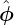
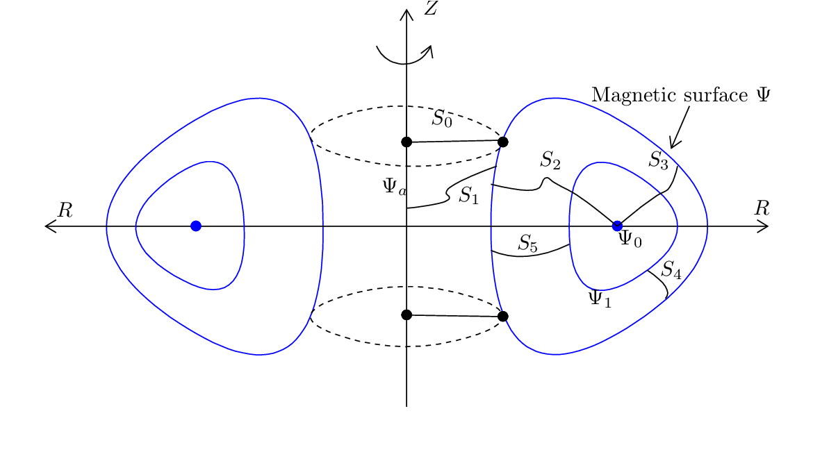
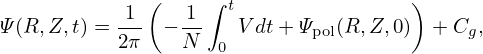
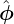
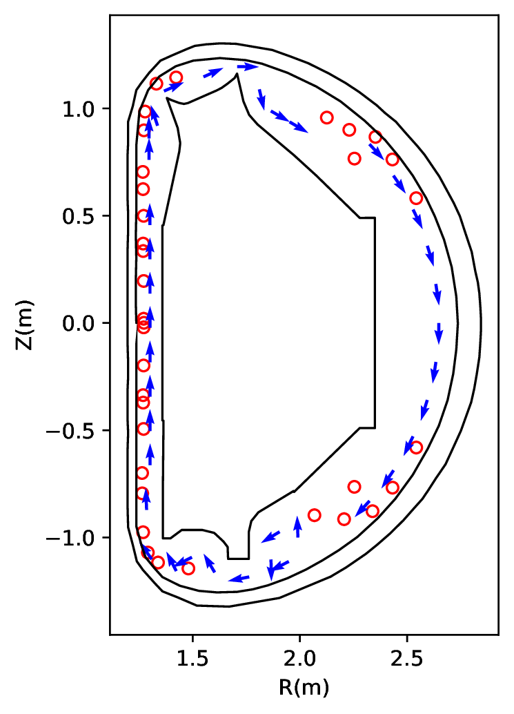
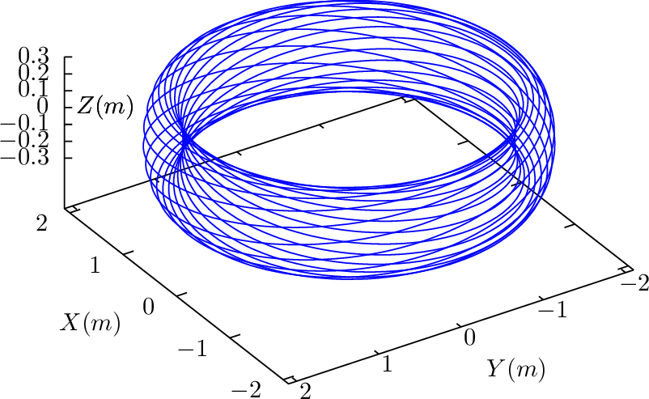
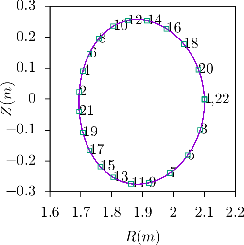

Due to the divergence-free condition, i.e., ∇⋅ B = 0, magnetic field can be expressed as the curl of a vector field:
|
| (1) |
where A is called the vector potential of B. (The usefullness of this representation is that, once B is in this form, we do not need to worry about the divergence-free constraint.) In cylindrical coordinates (R,ϕ,Z), the above expression is written
|
| (2) |
We consider axisymmetric magnetic field, which means that, when expressed in the cylindrical coordinate system (R,ϕ,Z), the components of B, namely BR, BZ, and Bϕ, are all independent of ϕ. For this case, it can be proved that an axisymmetric vector potential A suffices for expressing the magnetic field, i.e., all the components of the vector potential A can also be taken independent of ϕ. Using this, Eq. (2) is written
|
| (3) |
In tokamak literature,  direction is called the toroidal direction, and (R,Z) planes (i.e., ϕ = const planes) are called poloidal planes.
Equation (3) indicates that the two poloidal components of B, namely BR and BZ, are determined by a single component of A, namely Aϕ. This motivates us to define a function Ψ(R,Z):
|
| (4) |
Then Eq. (3) implies the poloidal components, BR and BZ, can be written as
|
| (5) |
|
| (6) |
(Note that it is the property of being axisymmetric and divergence-free that enables us to express the two components of B, namely BR and BZ, in terms of a single function Ψ(R,Z).) Furthermore, it is ready to prove that Ψ is constant along a magnetic field line, i.e. B ⋅∇Ψ = 0. [Proof:
(We note that Ψ is related to poloidal magnetic flux, as we will discuss in Sec. 1.7.)
Using Eqs. (5) and (6), the poloidal magnetic field Bp is written as
Next, let’s examine the toroidal component Bϕ. Equation (3) indicates that Bϕ involves both AR and AZ. This indicates that using the potential form does not enable useful simplification for Bϕ. Therfore we will directly use Bϕ. Define g ≡ RBϕ(R,Z) (the reason that we define this quantity will become clear when we discuss the forece balance), then the toroidal magnetic field is written as
|
| (9) |
Combining Eqs. (8) and (9), we obtain
which is a general expression of axisymmetric magnetic field. Expression (10) is a famous formula in tokamak physics.
Let us discuss the gauge freedom of A in the axisymmetric case. Magnetic field remains the same under the following gauge transformation of the vector potential:
 | (11) |
where f is an arbitrary scalar field. Here we require that ∇f be axisymmetric because, as mentioned above, an axisymmetric vector potential suffices for describing an axisymmetric magnetic field. In cylindrical coordinates, ∇f is given by
 | (12) |
Since ∇f is axisymmetric, it follows that all the three components of ∇f are independent of ϕ, i.e., ∂2f∕∂R∂ϕ = 0, ∂2f∕∂Z∂ϕ = 0, and ∂2f∕∂ϕ2 = 0, which implies that ∂f∕∂ϕ is independent of R, Z, and ϕ, i.e., ∂f∕∂ϕ is actually a spatial constant. Denote this constant by C. Then ϕ component of the gauge transformation (11) is written
(We see that the requirement of being axial symmetry greatly reduces gauge freedom of Aϕ.) Multiplying Eq. (13) with R, we obtain the corresponding gauge transformation for Ψ,
 | (14) |
which indicates Ψ is similar to that of electrostatic potential, i.e., adding a constant to it does not make difference. Note that the definition Ψ(R,Z) ≡ RAϕ does not imply Ψ(R = 0,Z) = 0 because Aϕ can adopt 1∕R dependence under the gauge transformation (13). If Aϕ is finite at R = 0, then Ψ is zero there. This is the case we encounter in the equilibrium reconstruction problem.
Because Ψ is constant along a magnetic field line and Ψ is independent of ϕ, the projection of a magnetic field line onto (R,Z) plane is a contour of Ψ. Inversely, a contour of Ψ is also projections of a magnetic field line onto the plane. [Proof. A contour of Ψ on (R,Z) plane satisfies
|
| (15) |
i.e.,
|
| (16) |
|
| (17) |
Using Eqs. (5) and (6), the above equation is written
|
| (18) |
i.e.,
|
| (19) |
which is the equation of the projection of a magnetic field line in (R,Z) plane. This proves that contours of Ψ are projections of magnetic field lines in (R,Z) plane.]
Figure 1 shows typical contours of Ψ in a tokamak (CFETR tokamak as an example).
Points where the poloidal field is zero (i.e., ∇Ψ=0) are called magnetic null points. There are two types of null points : O-points and X-points, which can be visually identified by viewing contours of Ψ. Mathematically, O-points and X-points are distinguished by the sign of S defined by
 | (20) |
where S ≥ 0 corresponds to O-points and S < 0 corresponds to X-points.
Surfaces of revolution generated by rotating Ψ contours around the axis of symmetry (Z axis) are called magnetic surfaces or flux surfaces. No field line intersects these surfaces. We are only interested in flux surfaces within the machine wall. Some Ψ contours intersect the wall before they can form closed curves. These flux surfaces are called “open”. Otherwsie, they are called closed flux surfaces.
The value of Ψ is constant on a magnetic surface. Meanwhile, the values of Ψ on different magnetic surfaces are usually different. These two properties enable Ψ to be used as labels of magnetic surfaces. [In cases that there are multiple magnetic surfaces of the same value of Ψ, the ambiguity can be resolved by specifying which region the flux surfaces lie in, e.g., within or outside the last-closed-flux surface region, near the high-field side or low-field side, in the Scrape-Off Layer or the private flux region (the area between the X-point and the material divertor., i.e, the region between divertor legs that is unconnected to the plasma).]
In most part of a tokamak plasma, contours of Ψ in (R,Z) plane are closed before they touch the machine wall. Figure 2 shows some examples of closed flux surfaces.

The innermost magnetic surface reduces to a curve, which is called magnetic axis (in Fig. 2, Ψ0 labels the magnetic axis). ∇Ψ is zero at the magnetic axis since Ψ(R,Z) reach maximum/minimum there. As a result, the poloidal magnetic field is zero there (refer to Eq. (8)). For closed flux surfaces, since Bp = ∇Ψ ×∇ϕ, the condition ΨLCFS − Ψaxis > 0 means Bp points in the anticlockwise direction (viewed along ϕ direction), and ΨLCFS − Ψaxis < 0 means Bp points in the clockwise direction.
Note that Ψ is defined by Ψ = RAϕ, which is just a component of the vector potential A, thereby having no obvious physical meaning. Next, we show that Ψ has a simple relation with the poloidal magnetic flux that can be be measured in experiments.

 .
. In Fig. 3, there are two magnetic surfaces labeled, respectively, by Ψ = Ψ1 and Ψ = Ψ2. The poloidal
magnetic flux through any toroidal ribbons between the two magnetic surfaces is equal
to each other (due to the magnetic Gauss theorem). Denote this poloidal magnetic flux
by Ψp(12). Next, we calculate this flux. To make the calculation easy, we select a plane
perpendicular to the Z axis, as is shown by the dash line in Fig. (3). In this case, only BZ
contribute to the poloidal magnetic flux: (the positive direction of the plane is chosen to be  )
)
In experiments, we measure the poloidal magnetic flux through toroidal loops around the central symmetric axis (discussed in Sec. 1.8). Consider one of the loops that located at point (R,Z), then, using (21), the flux through the loop can be written as
|
| (22) |
The central symmetric axis (R = 0) is a field line. If Aϕ is finite at R = 0, then Ψ = AϕR is zero there. This is the case we encounter in the equilibrium reconstruction problem. Then this flux is written as
|
| (23) |
Due to this relation, Ψ is often called the poloidal magnetic flux per radian (SI unit: web/rad), or simply “the poloidal flux”. This relation allows the poloidal flux measurements to be used to constrain the GS equation in the equilibrium reconstrunction (discussed in Sec. 5). Note that the positive normal direction of the surface (where the magnetic flux Ψp is defined) is chosen in the +Z direction. This sign choice along with the 2π factor appearing in Eq. (23) are often confusing people when they try to relate the experimentally measured flux with the Ψ appearing in the GS equation. The 2π factor also appears when we relate the Green function of Ψ to the mutual inductance, i.e., M = 2πG (discussed later).
A further compliction is that when one talks about “the poloidal magnetic flux of a magnetic surface”, there are two possibilities of the defintion. One of them is defined relative to the R = 0 (as is discussed above), and another is relative to the magnetic axis. The first definition is the flux through the central hole of the magnetic surface, i.e., the poloidal flux through S0 in Fig. 2. In this case, as is discussed above, the poloidal magnetic flux is related to Ψ by
|
| (24) |
where the postive direction is +. The is the more often used defintion, and we will stick to this in the equilibrium reconstruction problem.
The second definition is the flux enclosed by the closed flux surface, i.e., the flux through the toroidal ribbon S2. Denote this flux by Ψp(axis), then
|
| (25) |
where Ψaxis is the value of Ψ at the magnetic axis, the S2 orientation is in the clockwise direction when an observer looks along the direction of .
By measuring the voltage around a toroidal wire loop, we can obtain the time derivative of the poloidal flux and, after integrating over time, the flux itself.
Suppose that there is a toroidal wire loop located at (R,Z) and denote the magnetic flux through the loop by Ψp(R,Z,t) (only the poloidal magnetic field contribute to this flux, hence this flux is called the poloidal flux). Then Faraday’s law
|
| (26) |
where the direction of the loop integration and the direction of dS is related by the right-hand rule, is written as
|
| (27) |
where 𝜀 = ∮ E ⋅ dl is often called electromotive force (emf). If the loop is a coil with N turns, the induced voltage V in the coil is N times the emf, i.e., V = N𝜀. Then Eq. (27) is written as
|
| (28) |
Integrating the above equation over time, we obtain
|
| (29) |
The starting time t = 0 can be chosen as when Ψp(R,Z,0) is easy to know (e.g., when there is no plasma). Equation (29) tells us how to calcualte Ψp from the measured loop voltage V . Then Ψ is obtained by Ψ = Ψp∕(2π).
There are usually many flux loops (e.g. 35 on EAST[?]) at different locations in the poloidal plane (see Fig. 4). They are outside of the plasma region and thus are “external magnetic measurements”. The measured poloidal flux, along with the poloidal field measurement by magnetic probes, can be used as constraints in reconstructing the magnetic field within the plasma region. This is discussed in Sec. 5.

A magnetic field line on a closed magnetic surface travel a closed curve in the poloidal plane. For these field lines, we can define the safety factor q: the number of toroidal loops a magnetic field line travels when it makes one poloidal loop, i.e.
|
| (30) |
where △ϕ as the change of the toroidal angle when a magnetic field line travels a full poloidal loop.
For open field line region (where a field line touches the wall before its poloidal projection can close itself), the “connection length” is often used to characterize the magnetic field.
The equation of magnetic field lines is given by
|
| (31) |
where dℓp is the line element along the direction of Bp on the poloidal plane. Equation (31) can be arranged in the form
|
| (32) |
which can be integrated over dℓp to give
|
| (33) |
where the line integration is along the poloidal magnetic field (the contour of Ψ on the poloidal plane). Using this, Eq. (30) is written
|
| (34) |
The safety factor given by Eq. (34) is expressed in terms of the components of the magnetic field. The safety factor can also be expressed in terms of the magnetic flux. Define ΔΨp as the poloidal magnetic flux enclosed by two neighboring magnetic surface, then ΔΨp is given by
|
| (35) |
where Δx is the length of a line segment in the poloidal plane between the two magnetic surfaces, which is perpendicular to the first magnetic surface (so perpendicular to the Bp). Note that Δx, as well as R and Bp, generally depends on the poloidal location whereas ΔΨp is independent of the poloidal location.
Using Eq. (35), the poloidal magnetic field is written as
|
| (36) |
Substituting Eq. (36) into Eq. (34), we obtain
|
| (37) |
We know ΔΨp is a constant independent of the poloidal location, so ΔΨp can be taken outside the integration to give
|
| (38) |
It is ready to realise that the integral appearing in Eq. (38) is the toroidal magnetic flux enclosed by the two magnetic surfaces, ΔΦ. Using this, Eq. (38) is written as
|
| (39) |
Equation (39) indicates that the safety factor of a magnetic surface is equal to the differential of the toroidal magnetic flux with respect to the poloidal magnetic flux enclosed by the magnetic surface.
If the safety factor of a magnetic surface is a rational number, i.e., q = m∕n, where m and n are integers, then this magnetic surface is called a rational surface, otherwise an irrational surface. A field line on a rational surface with q = m∕n closes itself after it travels n poloidal loops. An example of a field line on a rational surface is shown in Fig. 5.
 
In the above, the magnetic field is assumed to be axisymmetric. With this assumption, the poloidal magnetic field (having two components) can be expressed in terms of a single component of the vector potential A, Aϕ (specifically via Ψ ≡ AϕR). This kind of simplification is not achievable if the axisymmetricity assumption is dropped, because other components of the vector potential (namely AR and AZ) will appear in the expression of the poloidal magnetic field. Let us re-examine Eq. (2) for a general magnetic perturbation:
When studying tearing modes and electromagnetic turbulence, most authors narrow the possible perturbations by setting δAR = δAZ = 0, i.e.,|
| (41) |
 | (42) |
 | (43) |
where δΨ = RδAϕ. Therefore this kind of magnetic perturbation can still be written in the same form as the equilibrium poloidal magnetic field:
 | (44) |
The above approximation is widely used in practice, e.g., in turbulence simulation, where δAϕ is replaced by δA∥. (Do we miss some magnetic perturbations that is important for plasma transport when using the above specific form?)
The total magnetic field is then written as
 | (45) |
**check**Can the projection of the total magnetic field line in the poloidal plane can be traced by tracing the contour of Ψ + δΨ? No. The contours of Ψ + δΨ will not show island structures in the poloidal plane. To show the expected island structures, we need to subtract non-reconnecting poloidal magnetic field from the total poloidal field? **check** The contours of the so-called helical flux will give the expected island structures near the resonant surfaces?**check**
Next, we go back to discuss the 2D case (i.e., assuming axisymmetry).
When the displacement current term is neglectable (the case we consider here), the conductive current is just another representation of the magnetic field. Specifically, the current density is proportional to the curl of the magnetic field (Ampère’s law):
where μ0 is vacuum magnetic permeability.
Use Eq. (46) and the definition g ≡ RBϕ, the poloidal components of the current density, JZ and JR, can be written as
|
| (47) |
and
|
| (48) |
respectively.
Ampere’s law (46) indicates the toroidal current density Jϕ is given by
Define △⋆ by|
| (50) |
then Eq. (49) is written as
|
| (51) |
(Many authors incorrectly refer to Eq. (51) as the Grad-Shafranov (GS) equation. Eq. (51) is just Ampere’s law, which has nothing to do with the force-balance. Only after we express Jϕ in terms of the plasma pressure, can Eq. (51) be called the GS equation, as is discussed Sec. 4.3.)
The operator △⋆ is different from the Laplacian operator △≡∇⋅∇. In terms of the nabla operator ∇, the operator △⋆ is writen as
|
| (52) |
Let us consider what constraint the force balance imposes on the axisymmetric magnetic field discussed above. The MHD momentum equation is given by
|
| (53) |
where ρ, ρq, ℙ, J, E, and B are mass density, charge density, thermal pressure tensor, current density, electric field, and magnetic field, respectively. The electric field force ρqE is usually ignored due to either ρq = 0 or E = 0. Further assume that there is no plasma flow (u = 0, the flow effect is discussed in ??) and the plasma pressure is isotropic, then the steady state momentum equation (force balance equation) is written as
|
| (54) |
where P is the scalar plasma pressure.
Is the force balance (54) always satisfied in a real toakamak discharge? To answer this question, we need to go back to the original momentum equation (53). The imbalance between J × B and ∇P will give rise to the compressional Alfven waves, the time-scale of which, τA, is much shorter than the time-scale τ we are interested in. Therefore, on the time scale τ (and for slow flow with u < Cs, where Cs is the the sound speed), the leading order of the momentum equation is the force balance (54).[?]. I.e. the inertial effect can be neglected (plasma mass is approximately zero).
Consider the force balance in the direction of B. Dotting the equilibrium equation (54) by B, we obtain
|
| (55) |
which implies that P is constant along a magnetic field line. Since Ψ is also constant along a magnetic field line, P can be expressed in terms of only Ψ on a single magnetic line. Note that this does not necessarily mean P is a single-valued function of Ψ, (i.e. P = P(Ψ)). This is because P still has the freedom of taking different values on different magnetic field lines with the same value of Ψ while still satisfying B ⋅∇P = 0. This situation can appear when there are saddle points (X points) in Ψ contours (refer to Sec. ??) and P takes different functions of Ψ in islands of Ψ sepearated by a X point. For pressure within a single island of Ψ, P = P(Ψ) can be safely assumed.
On the other hand, if P = P(Ψ), then we obtain
| B ⋅∇P = B ⋅∇Ψ = 0, |
i.e., Eq. (55) is satisfied, indicating P = P(Ψ) is a sufficient condition for the force balance in the parallel (to the magnetic field) direction.
Consider the force balance in the toroidal direction. The ϕ component of Eq. (54) is written
|
| (56) |
Since P = P(Ψ), which implies ∂P∕∂ϕ = 0, equation (56) reduces to
|
| (57) |
Using the expressions of the poloidal current density (47) and (48) in the force balance equation (57) yields
|
| (58) |
which can be further written
|
| (59) |
According to the same reasoning for the pressure, we conclude that g = g(Ψ) is a sufficient condition for the toroidal force balance. (The function g defined here is usually called the “poloidal current function” in tokamak literature. The reason for this name is discussed in Sec. ??.)
Consider the force balance in direction. The component of Eq. (54) is written
|
| (60) |
Using the expressions of the current density and magnetic field [Eqs. (6) and (48)], equation (60) is written
|
| (61) |
Assuming the sufficient condition discussed above, i.e., P and g are a function of only Ψ, i.e., P = P(Ψ) and g = g(Ψ), Eq. (61) is written
|
| (62) |
which can be simplified to
|
| (63) |
which is the requirement of force-balance along the major radius. On the other hand, we know Jϕ can be expressed in Ψ via Eq. (51). Combining this with Eq. (63) yields
 | (64) |
i.e.,
|
| (65) |
Equation (65) is known as Grad-Shafranov (GS) equation.
[Note that the Z component of the force balance equation is written
|
which turns out to be identical with the Grad-Shafranov equation. This is not a coincidence. The reason is that the force balance equation has been satisfied in three different directions (namely, , , and B direction) and thus it must be satisfied in all the directions.]
A general axisymmetric magnetic field (which does not necessarily satisfy the force balance), is given by Eq. (10), i.e.,
|
| (66) |
For the above axisymmetric magnetic field to be consistent with the force balance equation (54), there are additional requirements for Ψ and g. Specifically, Ψ is restricted by the GS equation and g should be a function of only Ψ. Therefore an axisymmetric equilibrium magnetic field is fully determined by two functions, Ψ = Ψ(R,Z) and g = g(Ψ). The Ψ is determined by solving the GS equation with specified RHS source terms and boundary conditions.
The RHS source terms in the GS equation (65) are P(Ψ) and g(Ψ), both of which must be specified before the GS equation can be solved. For most cases, the source terms are nonlinear about Ψ and thus the GS equation is a two-dimensional (in R and Z) nonlinear partial differential equation for Ψ.
For most choices of P(Ψ) and g(Ψ), the GS equation (65) has to be solved numerically. For some particular choices of P and g profiles, analytical solutions are available, one of which is the Solovév equilibrium and is discussed in Appendix ??.
Note that we solve the GS equation in order to obtain the poloidal magnetic flux Ψ and thus the poloidal magnetic field. The toroidal magnetic field must be specified in some way before we can solve the GS equation. There are several ways of specifying the toroidal magnetic field: (1) given g(Ψ), (2) given ⟨j∥⟩, (3) given the safety factor q(Ψ). There are simple relations between g, ⟨j∥⟩, and q, which allows translation form one to another (discussed later). In transport simulations, ⟨j∥⟩ is obtained from current drive models and neoclassical bootstrap current models. Note that the specification of the source terms (P, g, q, and ⟨j∥⟩) usually involve the unknown Ψ (via not only the explicit presence of Ψ, but also the flux-surface averaging which implicitly involves Ψ). This indicates that iterations are needed when numerically solving the GS equation.
A routine in tokamak operation is to reconstruct magnetic field under the constraints of MHD force balance and expermental measurements. This kind of task can be done by various codes, e.g., EFIT. I developed a similar code, heq (github.com/youjunhu/heq). I will discuss details on this code.
Ampere’s law in Eq. (51) can be generalized to include discrete toroidal currents:
|
| (68) |
where G is the fundamental solution given by
which is often called Green’s function in this context (which is obtained by using a formula similar to the Biot-Savart Law, see ??).If all the toroidal currents (plasma current + coil/vessel curents) are known, then Ψ can be calculated by using Eq. (68). Unfortunately, Jϕ is usually unknown. Meanwhile the force-balance indicates that Jϕ can be expressed in terms of Ψ via Eq. (63), i.e.,
|
| (70) |
Substituting this into Eq. (68) gives an implicit formula for Ψ, which can be iterated (with an initial guess of Ψ(R,Z), and assuming the function forms, P(Ψ) and g(Ψ), as well as the coil currents Ii, are known ). We can see that this is a Picard iteration. Will the iteration converge? We do not know for sure. Numerical experiments indicate it does in some cases. Let us discuss some specific cases. We assume that the 1D functions, P(Ψ) and g(Ψ), can be modeled as (EFIT’s model[?]):
|
| (71) |
|
| (72) |
where
|
| (73) |
ΨA and ΨB are values of Ψ at the magnetic axis and LCFS, the coefficients αj and βj are to be determined, Np and NF are integers chosen by users. Expressions (71) and (72) guarantee that dP∕dΨ and gdg∕dΨ are zero at and outside the LCFS, and thus no plasma current there. Note that expressions (71) and (72) are nonlinear functions of Ψ even for Np = NF = 1. This is because the unknowns, ΨA and ΨB, appear in the denominator of expression (73). Another nonlinearity is related to the fact that the unkonw Ψ determines where the LCFS is and thus determines the region where the current desnsity is set to zero. This also gives rise to the name “free-boundary” for this kind of problems.
Choosing an initial guess of Ψ(R,Z) on gridpoints, we can get the values of αj, βj, and Ii by solving a least square problem that minimises the difference between quantities computed and the corresponding quantities measured in actual experiments. (Details are given in Sec. 5.1.)
After the coefficients αj and βj are obtained, Jϕ can be updated by using Eqs. (70)-(72). Then, we use the latest Jϕ and Ii in Eq. (68) to re-compute the values of Ψ on gridpoints by using Eq. (68). The procedure is repeted until convergecne in Ψ(R,Z). This is called Picard iteration. (Alternatively, the values of Ψ on the inner gridpoints can be updated by inverting the Laplace operator △⋆, see Sec. 5.4. The values of Ψ on the bounary still have to be obtained by using Eq. (68).)
I implemented the above method in a Python code (HEQ https://github.com/youjunhu/heq). The following subsections discuss details of the code: Sec. 5.1 discusses the least square problem. Sec. 5.3 discusses the vertical displacement instability stabilizer. Without the stabilizer, the Picard iteration diverges for many elongated configurations, due to the vertical displacement instability.
For x ≤ 1, plugging expressions (71) and (72) into (70), we obtain
For notation ease, define the following basis functions:|
| (75) |
and the corresponding expansion coefficients
|
| (76) |
then Eq. (74) is written as
|
| (77) |
where Nb = NP + NF. Plugging expression (77) into Eq. (68), we obtain
Collect all the free parameters as a column vector: u = (c0,…cNb−1,I0,…,INc−1)T. Denote the size of vector u by N, which is the number of free parameters, i.e., N = Nb + Nc, then the rhs of Eq. (78) can be written as matrix-vector product, Γu. Denote the total number of measurements of the poloidal flux by MFL. Then matrix elements of Γ for i = 0,…,MFL − 1 are given by:|
| (79) |
for j = 0,…,Nb − 1, and
|
| (80) |
for j = Nb,…,N − 1. Here (Ri(FL),Zi(FL)) is the location where the ith flux measurement is made.
The matrix Γ , which is of shape (M,N), is called “response matrix”. (In least square problems, this matrix is called “design matrix’.) The value of M is equal to number of measurements/constraints included (measurements/constraints are merged to Γ by row stacking). We will include MFL measurements of the poloidal flux, MB measurements of the poloidal magnetic field, 1 measurement of plasma current, a constraint for the on-axis safety factor. Then M = MFL + MB + 1 + 1. (For EAST, MFL = 35,MB = 38.)
Next, we consider the poloidal field measurement:
|
| (81) |
where (Ri,Zi) is the location of the No. i probe,  i is a unit vector denoting the positive normal
direction of the No. i magnetic probe, cos𝜃pi =
i is a unit vector denoting the positive normal
direction of the No. i magnetic probe, cos𝜃pi =  i ⋅ eR, sin𝜃pi =
i ⋅ eR, sin𝜃pi =  i ⋅ eZ.
i ⋅ eZ.
Bp(Ri,Zi) can be inferred from u via
where
 | (83) |
and GBR and GBZ is given by Eq. (??) and (??). The rhs of Eq. (82) indicates that the matrix elements of Γ are given by:
|
| (84) |
for (j = 0,…,Nb − 1), and
|
| (85) |
for (j = Nb,…,N − 1) . I place the magnetic field equations after the flux equations, i.,e the row number i is in the range [MFL,MFL + MB − 1].
Next, we consider the constraint of plasma current. The plasma current Ip can be inferred from u via
|
| (86) |
The rhs of Eq. (86) indicates that the matrix elements of Γ are given by:
 | (87) |
for (j = 0,…,Nb − 1), and zero for (j = Nb,…,N − 1) . This equation is placed after the equations of flux and magnetic field measurement, i.e., its row number is i = MFL + MB.
Let us consider the constraint of the on-axis safety factor qaxis. A formula for computing qaxis is given by:
 | (88) |
where
|
| (89) |
is the ellipticity (elongation) at the magnetic axis. Organizing Eq. (88) as
|
| (90) |
and using
 | (91) |
equation (90) is written as
|
| (92) |
This provides one linear equation for cj, with the matrix elements given by
|
| (93) |
for (j = 0,…,Nb − 1), and zero for (j = Nb,…,N − 1) .
In HEQ, the ellipticity 𝜖 is calculated by computing the elongation of the innermost magnetic surface found by the contour program.
Step 0. Initial guess of Ψ: Ψ(k) with k = 0.
Step 1. Search for the magnetic axis and LCFS of Ψ(k) so that we get the values of Ψ(k) at those locations. These values are needed in computing x = (Ψ(k) − ΨM)∕(ΨB − ΨM). The location of the LCFS are also needed because we need to set the plasma current to zero outside the LCFS.
Step 2. Compute elements of response matrix Γ using Ψ(k).
Step 3. Solve linear least-square problem to get (c1,…,cNb,I1,…,INc).
Step 4. Update Ψ using the latest plasma and coil currents:
| Ψ(k+1) = ∫ GJϕ(R′,Ψ(k),c 1,c2,c3,c4)dR′dZ′ + ∑ n=1Nc GIn, |
or in its discrete form:
| Ψij(k+1) = ∑ i′,j′Gi′j′ijdSi′j′ + ∑ n=1Nc Gn,ij(c)I n. |
Step 5: k = k + 1 and goto Step 1.
To stabilize the vertical displacement instability in the Picard iteration, we add two virtual coils that carry oppositive currents (denoted by Ivc and −Ivc), and are up-down symmetric, located at (Rvc,Zvc) and (Rvc,−Zvc), respectively. And set the current Ivc by
| Ivc = −gz, |
where (Rcur,Zcur) is the location of plasma current center defined by
| Rcur = ∫ ΩplRJϕ(R,Z)dRdZ, |
| Zcur = ∫ ΩplZJϕ(R,Z)dRdZ, |
BR,vacuum is the BR generated by all the real PF coils, gz is a positive constant chosen by users. Note that g = 1 corresponds to that the BR generated by the virtual coils exactly cancles the BR generted by all the real coils. Usually we need value larger than 2, i.e., over compensation. The virtual coils locatons, (Rvc,Zvc) and (Rvc,−Zvc), are usually chosen near the center of the top/bottom boundary of the computational box.
If we want to invert the finite-difference version of the Laplace operator △∗ to solve the GS equation for Ψ, we encounter two issues: (1) the RHS of the GS equation involves 2 unknown functions P′(Ψ) and gg′(Ψ), in addition to the main unknown function Ψ(R,Z); (2) the boundary condition needs to be given: i.e., the values of Ψ on a rectangular computational boundry need to be provided.
To address issue (1): function forms of P′(Ψ) and g′g(Ψ) are chosen by users, often as polymials in ΨN with coefficients that are assumed known (which are later obtained in the least-square method to make the resulting solution approximately match some measurements, as is discussed in the previous section).
To address issue (2): The value of Ψ on the rectangular boundary is updated using the Green’s function method (assume that external coil currents are given), as is discussed in the previous section.
Guess values of Ψ on both the inner gridpoints and boundary points. After this, we can invert △∗ to update Ψ within the computational box, and use the Green’s function method to update values of Ψ on the boundary. Then iterate to converge.
Two iterations: one for Ψ values on the inner gridpoints, one over Ψ values on the computational boundary.
External PF coil currents enter the problem via the boundary condition: specifically via its contribution to Ψ on the boundary.
The above procedure is just a minor modification from the pure Green’s function algorithm discussed in Sec. 5.2, i.e., replacing the Green’s function method for the inner gridpoints with the finte-difference Laplace operator inverting.
For reference easy, the finite-difference schemes for the Laplace operator is listed below.
|
| (94) |
Method 1: discretize Eq. (95) as
| aφi−1,j + bφi,j + cφi+1,j + dφi,j−1 + eφi,j+1 = −μ0RiJϕi,j, |
where b = −−, a = , c = 
 , d = e = . Method 2:
discetize Eq. (96)
, d = e = . Method 2:
discetize Eq. (96)
| aφi−1,j + bφi,j + cφi+1,j + dφi,j−1 + eφi,j+1 = −μ0RiJϕi,j, |
where b = − − a = +
− a = +  , c =
, c =  −
− , d = e =
, d = e = 
My numerical experiments indicate this scheme is more stable than than the first one (for the same grid size, and without the VDE stabilizer, the first scheme blow up while the latter scheme works well).
Semi-free boundary equilibrium problems refer to the problems where the LCFS shape and the value of Ψ on it are given, and one is asked to solve the currents in the PF coils. This is similar to the fitting problem discussed above: we consider the control points on the LCFS as virtual flux loops that measure the poloidal flux. This mode can be used to set the feedforward PF coil currents when a target plasma state time evolution is given.
Using magnetic measurements as input, a realtime equilibrium reconstruction code (e.g., rtefit) can infer the inner structure of Ψ (observer). On the other hand, PF coil currents can provide actions on Ψ (actuactor). With the observer and actuator, we can feedback controll the magnetic configuration (flux map).
For example, consider controlling the shape of LCFS (often called iso-flux control). We choose a target surface. To make sure that the target surface is a magnetic surface, the value of Ψ on it should be made a spatial constant. Dentoe this constant by Ψt. To make sure that there is no closed flux surface outside the target surface, we select the target surface as a surface that is tangential to the first wall (for limiter configuration) or there is a X-point on it (for divertor configuration). Then discretize the target surface by a series of discrete coordinates (Ri,Zi) with i = 1,2,…M. The actions (coil current changes) are chosen to minimise the following residual:
 | (99) |
where
|
| (100) |
|
| (101) |
the superscritp (old) indicates values before the control actions, Ψi(old) is obtained by a real-time equilibrium reconstruction code. This assumes that the plasma current density remains the same when the actions are imposed (i.e., no plasma response is included), so that only the coil current changes contribute to the Ψ change.
If we need to feedback control X points to desired positions, then the above sum can be extended to include the following:

Faraday’s law
|
| (103) |
can be written in the integral form:
|
| (104) |
(The direction of the loop integration is related to the surface orientation by the right-hand rule.) I.e.,
|
| (105) |
where Ψp is the flux linked with the loop.
For the No. k coil, the time derivative of the flux through it can be expressed as
|
| (106) |
where Mjk is the mutual indctance between the No. j coil and No. k coil, Mk(r) is the mutual inductance between the No. k coil and a plasma filament located at r, and JϕdS is the current carried by the filament. The integration is over a fixed region (time independent) that is large enough to include all the plasma and small enough to not include any coil.
Define the effective mutual inductance between the plasma and the No. k coil by
|
| (107) |
where Ip is the plasma current, then expression (106) is written as
|
| (109) |
where ℛk is the resistence of the coil, Ik is the current in the present coil, V k is the voltage imposed on the coil by the power supply. (Here the positive direction of V k and Ik must be chosen consistent with the loop integration discussed above i.e., anti-clockwise in top view.)
The VDE controlling coils are made of two coils (one upper and one lower, with updown symmetry), which are anti-conneted in series and powered by one voltage source. For the upper (U) coil, the circuit equation is
|
| (110) |
Similarly, for the lower (L) coil, the circuit equation is
|
| (111) |
The anti-series connection implies that
|
| (112) |
and
|
| (113) |
where V VDE is the source voltage (assuming the voltage source positive terminal is connected to the upper coil that goes anti-clockwise in top view). Combining these equations, we obtain
 | (114) |
This is used as an equation for the upper VDE coil current. Eq. (112) is used as an equation for the lower VDE coil current.
Because the mutual inductance between two objects is symmetric (i.e., MAB = MBA), the mutual inductance Mk,p given by expression (107) can also be used to calculate the effective emf induced in the plasma by the coils:
Similarly, the effective emf self-induced in the plasma is given by
|
| (115) |
where Mi′j′ij is the mutual inductance between ij filament and i′j′ filament; both the 2D integrations are over a fixed region that includes the plasma but does not include any coil; one of the two 2D integrations can be regarded as Jϕ weighted average and the other is the integration over the source. Expresion (115) motivates us to define the effective self-inductance of plasma by
|
| (116) |
Then the effective emf in expression (115) is written as
|
| (117) |
where ℛp is the effective plasma resistivity.
Using the Euler implicit scheme, the coil current evolution equation (109) is written as
| V k(n) −∑ j=1Nc Mjk − Mk,p = Ik(n+1)ℛ k. |
Moving all the unknown (coil currents Ij(n+1) and plasma current Ip(n+1)) to the left-hand side, we get

Similarly, the plasma current evolution equation (117) is discretized as
|
| (119) |
i.e.,
|
| (120) |
Define the plasma state by the position of the magnetic axis (Ra,Za), total plasma current Ip, and the shape of the LCFS. Discretize the LCFS in the cylindrical coordinates by Ns points. Then the plasma state can be represented by 2Ns + 3 real numbers: Ra, Za, Ip, and (Ri,Zi) for i = 1,2,…Ns.
Inputs to the policy network: the magnetic measurements at the present time step tn (which serves as a proxy to the actual plasma state), and target plasma states (provided by the designer) at tn,tn+1,…,tn+k (where k may be a small integer, say k = 1).
Output of the policy network: voltage command to the coils imposed at tn which can hopefully make the plasma follow the target state in future time steps.
How to train the policy network on a plasma simulator?
In many studies of tokamak plasmas, one need construct a curvilinear coordinate system based on a given magnetic cofiguration in order to make the problem amenable to analytical methods or numerical methods. Specifically, many theories and numerical codes use the curvilinear coordinate systems that are constructed with one coordinate surface coinciding with magnetic surfaces. In these coordinate systems, we need to choose a poloidal coordinate 𝜃 and a toroidal coordinate ζ. A particular choice for 𝜃 and ζ is one that makes the magnetic field lines be straight lines in (𝜃,ζ) plane. These kinds of coordinates are often called magnetic coordinates. That is, “magnetic coordinates are defined so they conform to the shape of the magnetic surfaces and trivialize the equations for the field lines.”
A further tuned magnetic coordinate system is the so-called field aligned (or filed-line following) coordinate system, in which changing one of the three coordinates with the other two fixed would correspond to following a magnetic field line. The field aligned coordinates are discussed in Sec. 15.
Next, let us discuss some general properties about coordinates transformation[4].
In the Cartesian coordinates, a point is described by its coordinates (x,y,z), which, in the vector form, is written as
|
| (121) |
where r is the location vector of the point; , , and are the basis vectors of the Cartesian coordinates, which are constant, independent of spactial location. The transformation between the Cartesian coordinates system, (x,y,z), and a general coordinates system, (x1,x2,x3), can be expressed as
|
| (122) |
For example, cylindrical coordinates (R,ϕ,Z) can be considered as a general coordinate systems, which are defined by r = R cosϕ + R sinϕ + Z.
The transformation function in Eq. (122) can be written as
|
| (123) |
A useful quality characterizing coordinate transformation is the Jacobian determinant (or simply called Jacobian), which, for the transformation in Eq. (123), is defined by
|
| (124) |
which can also be written as
|
| (125) |
It is easy to prove that the Jacobian 𝒥 in Eq. (125) can also be written (the derivation is given in my notes on Jacobian)
|
| (126) |
Conventionally, the Jacobian of the transformation from the Cartesian coordinates to a particular coordinate system σ is called the Jacobian of σ, without explitly mentioning that this transformation is with respect to the Cartesian coordinates.
Using the defintion in Eq. (124), the Jacobian 𝒥 of the Cartesian coordinates can be calculated, yielding 1. Likewise, the Jacobian of the cylindrical coordinates (R,ϕ,Z) can be calculated as follows:
In a curvilinear coordinate system (x1,x2,x3), there are two kinds of basis vectors: ∇xi and ∂r∕∂xi, with i = 1,2,3. These two kinds of basis vectors satisfy the following orthogonality relation:
|
| (127) |
where δij is the Kronical delta function. [Proof: Working in a Cartesian coordinate system (x,y,z) with
the corresponding basis vectors denoted by ( ,
, ,
, ), then the left-hand side of Eq. (127) can be written
as
), then the left-hand side of Eq. (127) can be written
as
 ∕∂xj = 0,∂
∕∂xj = 0,∂ ∕∂xj = 0,∂∕∂xj = 0 since ,, are
constant vectors independent of spatial location; the chain rule has been used in obtaining Eq.
(128)]
∕∂xj = 0,∂∕∂xj = 0 since ,, are
constant vectors independent of spatial location; the chain rule has been used in obtaining Eq.
(128)]
[The cylindrical coordinate system (R,ϕ,Z) is an example of general coordinates. As an exercise, we can verify that the cylindrical coordinates have the property given in Eq. (127). In this case, x = x1 cosx2, y = x1 sinx2, z = x3, where x1 ≡ R, x2 ≡ ϕ, x3 ≡ Z.]
It can be proved that ∇xi is a contravariant vector while ∂r∕∂xi is a covariant vector (I do not prove this and do not bother with the meaning of these names, just using this as a naming scheme for easy reference).
The orthogonality relation in Eq. (127) is fundamental to the theory of general coordinates. The orthogonality relation allows one to write the covariant basis vectors in terms of contravariant basis vectors and vice versa. For example, the orthogonality relation tells that ∂r∕∂x1 is orthogonal to ∇x2 and ∇x3, thus, ∂r∕∂x1 can be written as
|
| (129) |
where A is a unknown variable to be determined. To determine A, dotting Eq. (129) by ∇x1, and using the orthogonality relation again, we obtain
 | (130) |
which gives

 | (132) |
Similarly, we obtain
 | (133) |
and
 | (134) |
Equations (132)-(134) can be generally written
 | (135) |
where (i,j,k) represents the cyclic order in the variables (x1,x2,x3). Equation (135) expresses the covariant basis vectors in terms of the contravariant basis vectors. On the other hand, from Eq. (132)-(134), we obtain
 | (136) |
which expresses the contravariant basis vectors in terms of the covariant basis vectors.
Suppose (ψ,𝜃,ζ) is an arbitrary general coordinate system. Following Einstein’s notation, contravariant basis vectors are denoted with upper indices as


|
| (139) |
In term of the contravairant basis vectors, A is written
|
| (140) |
where the components are easily obtained by taking scalar product with eψ,e𝜃,andeζ, yielding Aψ = A ⋅ eψ, A𝜃 = A ⋅ e𝜃, and Aζ = A ⋅ eζ. Similarly, in term of the covariant basis vectors, A is written
|
| (141) |
where Aψ = A ⋅ eψ, A𝜃 = A ⋅ e𝜃, and Aζ = A ⋅ eζ.
Using the above notation, the relation in Eq. (135) is written as
|
| (142) |
|
| (143) |
|
| (144) |
where 𝒥 = [(∇ψ ×∇𝜃) ⋅∇ζ]−1. Similarly, the relation in Eq. (136) is written as
|
| (145) |
|
| (146) |
|
| (147) |
The gradient of a scalar function f(ψ,𝜃,ζ) is readily calculated from the chain rule,
 | (148) |
Note that the gradient of a scalar function is in the covariant representation. The inverse form of this expression is obtained by dotting the above equation respectively by the three contravariant basis vectors, yielding
 | (149) |
 | (150) |
 | (151) |
Using Eq. (148), the directional derivative in the direction of ∇ψ is written as
 | (152) |
To calculate the divergence of a vector, it is desired that the vector should be in the contravariant form because we can make use of the fact:
 | (153) |
for any scalar quantities α and β. Therefore we write vector A as
 | (154) |
where A(ψ) = A ⋅∇ψ, A(𝜃) = A ⋅∇𝜃, A(ζ) = A ⋅∇ζ. Then the divergence of A is readily calculated as
where the second equality is obtained by using Eqs. (149), (150), and (151).
The Laplacian operator is defined by ∇2 ≡∇⋅∇. Then ∇2f is written as (f is an arbitrary function)
To proceed, we can use the divergence formula (156) to express the divergence in the above expression. However, the vector in the above (blue term) is not in the covariant form desired by the divergence formula (156). If we want to directly use the formula (156), we need to transform the vector (blue term in expression (157)) to the covariant form. This process seems to be a little complicated. Therefore, I choose not to use this method. Instead, I try to simplify expression (157) by using basic vector identities:


To take the curl of a vector, it should be in the covariant representation since we can make use of the fact that ∇×∇α = 0. Thus the curl of A is written as
Note that taking the curl of a vector in the covariant form leaves the vector in the contravariant form.
Consider a general coordinate system (ψ,𝜃,ζ). I define the metric tensor as the transformation matrix between the covariant basis vectors and the contravariant ones. Equations (135) and (136) express the relation between the two sets of basis vectors using cross product. Next, let us express the relation in matrix from. To obtain the metric matrix, we write the contrariant basis vectors in terms of the covariant ones, such as
 | (163) |
Taking the scalar product respectively with ∇ψ, ∇𝜃, and ∇ζ, Eq. (163) is written as
 | (164) |
 | (165) |
 | (166) |
Similarly, we write
 | (167) |
Taking the scalar product with ∇ψ, ∇𝜃, and ∇ζ, respectively, the above becomes
 | (168) |
 | (169) |
 | (170) |
The same situation applies for the ∇ζ basis vector,
 | (171) |
Taking the scalar product with ∇ψ, ∇𝜃, and ∇ζ, respectively, the above equation becomes
 | (172) |
 | (173) |
 | (174) |
Summarizing the above results in matrix form, we obtain
 | (175) |
Similarly, to convert contravariant basis vector to covariant one, we write
 | (176) |
Taking the scalar product respectively with ∇𝜃 ×∇ζ𝒥 , ∇ζ ×∇ψ𝒥 , and ∇ψ ×∇𝜃𝒥 , the above equation becomes
 | (177) |
 | (178) |
 | (179) |
For the second contravariant basis vector
 | (180) |
 | (181) |
 | (182) |
 | (183) |
For the third contravariant basis vector
 | (184) |
 | (185) |
 | (186) |
 | (187) |
Summarizing these results, we obtain
 | (188) |
where
M =  , ,
|
This matrix and the matrix in Eqs. (175) should be the inverse of each other. It is ready to prove this by directly calculating the product of the two matrix.
Suppose that (ψ,𝜃,ϕ) are arbitrary general coordinates except that ϕ is the usual toroidal angle in
cylindrical coordinates. Then ∇ϕ = 1∕R is perpendicular to both ∇ψ and ∇𝜃. Using this, Eq. (175) is
simplified to
is perpendicular to both ∇ψ and ∇𝜃. Using this, Eq. (175) is
simplified to
 | (189) |
Similarly, Eq. (188) is simplified to
 | (190) |
[Note that the matrix in Eqs. (189) and (190) should be the inverse of each other. The product of the two matrix,
 | (191) |
can be calculated to give
 , ,
|
where
| A = |∇𝜃|2|∇ψ|2𝒥2∕R2 − (∇𝜃 ⋅∇ψ)2𝒥2. |
By using the definition of the Jacobian in Eq. (126), it is easy to verify that A = 1, i.e.,
 | (192) |
]
The axisymmetric equilibrium magnetic field is given by Eq. (66), i.e.,
 | (193) |
In a general coordinate system (ψ,𝜃,ϕ) (not necessarily flux coordinates), the above expression can be written as
 | (194) |
where the subscripts denote the partial derivatives with the corresponding subscripts. Note that Eq. (194) is a mixed representation, which involves both covariant and contravariant basis vectors. Equation (194) can be converted to the contravariant form by using the metric tensor, giving
 | (195) |
Similarly, Eq. (194) can also be transformed to the covariant form, giving
 | (196) |
For the convenience of notation, define
 | (197) |
then Eq. (196) is written as
 | (198) |
A coordinate system (ψ,𝜃,ϕ), where ϕ is the usual cylindrical toroidal angle, is called a magnetic/flux coordinate system if Ψ is a function of only ψ, i.e., ∂Ψ∕∂𝜃 = 0 (we also have ∂Ψ∕∂ϕ = 0 since we are considering axially symmetrical case). In terms of (ψ,𝜃,ϕ) coordinates, the contravariant form of the magnetic field, Eq. (195), is written as
 | (199) |
where Ψ′≡ dΨ∕dψ. The covariant form of the magnetic field, Eq. (196), is written as
 | (200) |
The local safety factor  is defined by
is defined by
 | (201) |
which characterizes the local pitch angle of a magnetic field line in (𝜃,ϕ) plane of a magnetic surface. Substituting the contravariant representation of the magnetic field, Eq. (199), into the above equation, the local safety factor is written
 | (202) |
Note that the expression  in Eq. (202) depends on the Jacobian 𝒥 . This is because the
definition of
in Eq. (202) depends on the Jacobian 𝒥 . This is because the
definition of  depends on the definition of 𝜃, which in turn depends on the the Jacobian
𝒥 .
depends on the definition of 𝜃, which in turn depends on the the Jacobian
𝒥 .
In terms of  , the contravariant form of the magnetic field, Eq. (199), is written
, the contravariant form of the magnetic field, Eq. (199), is written
 | (203) |
and the parallel differential operator B0 ⋅∇ is written as
 | (204) |
If  happens to be independent of 𝜃 (i.e., field lines are straight in (𝜃,ϕ) plane), then the above operator
becomes a constant coefficient differential oprator (after divided by 𝒥−1). This simplification is useful
because different poloidal harmonics are decoupled in this case. We will discuss this issue futher in Sec.
14.
happens to be independent of 𝜃 (i.e., field lines are straight in (𝜃,ϕ) plane), then the above operator
becomes a constant coefficient differential oprator (after divided by 𝒥−1). This simplification is useful
because different poloidal harmonics are decoupled in this case. We will discuss this issue futher in Sec.
14.
The global safety factor defined in Eq. (34) is actually the poloidal average of the local safety factor, i.e.,
Note that q and defined this way can be negative, which depends on the choice of the positive
direction of ϕ and 𝜃 coordinates (note that the safety factor given in G-eqdsk file is always positive, i.e.
it is the absolute value of the safety factor defined here).
defined this way can be negative, which depends on the choice of the positive
direction of ϕ and 𝜃 coordinates (note that the safety factor given in G-eqdsk file is always positive, i.e.
it is the absolute value of the safety factor defined here).
Next, let us transform the 𝜃 integration in expression (206) to a curve integral in the poloidal plane. Using the relation dℓp and d𝜃 [Eq. (214)], expression (206) is further written
Expression (207) is used in the GTAW code to numerically calculate the value of q on magnetic surfaces (as a benchmarking of the q profile specified in the G-eqdsk file). Expression (207) can also be considered as a relation between q and g. In the equilibrium problem where q is given (fixed-q equilibrium), we can use expression (207) to obtain the corresponding g (which explicitly appears in the GS equation):|
| (208) |
We note that expression (208) involves magnetic surface averaging, which is unknown before we know Ψ. Therefore iteration is usually needed in solving the fixed-q equilibrium (i.e., we guess the unknown Ψ, so that the magnetic surface averaging in expression (208) can be performed, yielding the values of g.)
Using Bp = |∇Ψ|∕R and Bϕ = g∕R, the absolute value of q in expression (207) is written
Given the definition of a magnetic surface coordinate system (ψ,𝜃,ϕ), the Jacobian of this system is fully determined. On the other hand, given the definition of ψ, ϕ, and the Jacobian, the definition of 𝜃 is fully determined (can have some trivial shifting freedoms). Next, let us discuss how to calculate 𝜃 in this case. In (ψ,𝜃,ϕ) coordinates, a line element is written
|
| (211) |
The line element that lies on a magnetic surface (i.e., dψ = 0) and in a poloidal plane (i.e., dϕ = 0) is then written
|
| (213) |
Using the fact that ∇ψ and ∇ϕ are orthogonal and ∇ϕ =  ∕R, the above equation is written
as
∕R, the above equation is written
as
 | (214) |
Given |𝒥∇ψ|, Eq. (214) can be integrated to determine the 𝜃 coordinate of points on a magnetic surface.
—–
 | (215) |
Once |𝒥∇ψ| is known, the value of 𝜃 of a point can be obtained by integrating expression (214), i.e.,
 | (216) |
where the curve integration is along the contour Ψ = Ψj, xref,j is a reference point on the contour, where value of the poloidal angle is chosen as 𝜃ref,j. The choice of the positive direction of 𝜃 is up to users. Depending on the positive direction chosen, the sign of the Jacobian of the constructed coordinates can have a sign difference from the 𝒥 appearing in Eq. (216). Denote the Jacobian of the constructed coordinates by 𝒥′, then
 | (217) |
This sign can be determined after the radial coordinate and the positive direction of the poloidal angle
are chosen. In GTAW code, I choose the positive direction of 𝜃 to be in anticlockwise direction when
observers look along the direction of  . To achieve this, the line integration in Eq. (216) should be
along the anticlockwise direction. (I use the determination of the direction matrix, a well known
method in graphic theory, to determine the direction from a given set of discrete points on a magnetic
surface.)
. To achieve this, the line integration in Eq. (216) should be
along the anticlockwise direction. (I use the determination of the direction matrix, a well known
method in graphic theory, to determine the direction from a given set of discrete points on a magnetic
surface.)
The span of 𝜃 defined by Eq. (216) is usually not 2π in one poloidal loop. This poloidal angle can be scaled by s(ψ) to define a new poloidal coordinate 𝜃, whose span is 2π in one poloidal loop, where s(ψ) is a magnetic surface function given by
 | (218) |
Then 𝜃 is written as
where 𝜃ref,j = s(ψj)𝜃ref,j. Sine we have modified the definition of the poloidal angle, the Jacobian of the new coordinates (ψ,𝜃,ϕ) is different from that of (ψ,𝜃,ϕ). The Jacobian 𝒥new of the new coordinates (ψ,𝜃,ϕ) is written as The Jacobian 𝒥 can be set to various forms to achieve various poloidal coordinates, which will be discussed in the next section. After the Jacobian and the radial coordinate ψ is chosen, all the quantities on the right-hand side of Eq. (219) are known and the integration can be performed to obtain the value of 𝜃i,j of each point on each flux surface.[The reference points xref,j and the values of poloidal angle at these points can be chosen by users. One choice of the reference points xref,j are those points on the horizontal ray in the midplane that starts from the magnetic axis and points to the low filed side of the device and 𝜃ref,j at these points is chosen as zero (this is my choice in the GTAW code). In the TEK code, the reference points are chosen at the high-field side of the midplane and 𝜃ref,j = −π at the reference points.]
If the Jacobian 𝒥 is chosen to be of the following form
 | (221) |
Then 𝜃i,j in Eq. (219) is written
 | (222) |
and the Jacobian of new coordinates (ψ,𝜃,ϕ), 𝒥new, which is given by Eq. (220), now takes the form
 | (223) |
Equation (222) indicates a set of poloidal points with equal arc intervals corresponds to a set of uniform 𝜃i points. Therefore this choice of the Jacobian is called the equal-arc-length Jacobian. Note that Eq. (222) does not involve the radial coordinate ψ. Therefore the values of 𝜃 of points on any magnetic surface can be determined before the radial coordinate is chosen.
The volume element in (ψ,𝜃,ϕ) coordinates is given by dV = |𝒥|d𝜃dϕdψ. If we choose a Jacobian that is independent of 𝜃, then uniform 𝜃 grids will correspond to grids with uniform volume interval. In this case, 𝒥 is written as
|
| (224) |
where h(ψ) is a function independent of 𝜃. Then 𝜃i,j in Eq. (219) is written
|
| (225) |
and the Jacobian of the new coordinates (ψ,𝜃,ϕ), 𝒥new, is given by Eq. (220), which now takes the following form:
|
| (226) |
Note that both 𝜃i,j and 𝒥new are independent of the function h(ψ) introduced in Eq. (224). (h(ψ) is eliminated by the normalization procedure specified in Sec. 8.15 due to the fact that h(ψ) is constant on a magnetic surface.) The equal-volume poloidal angle is also called Hamada poloidal angle.
The equal-volume poloidal angle is useful in achieving loading balance for parallel particle simulations. Assume that markers are loaded uniform in space and the poloidal angle is domain decomposed and assigned to different MPI process. Then the equal-volume poloidal angle can make marker number in each MPI process be equal to each other and thus work loading to each process be equal. (**check**If the domain decomposition is also applied to the radial direction, to achieve loading balance, then the radial coordinate ψ should be chosen in a way that makes ∮ (R∕∇ψ)dlp be independent of ψ, so that 𝒥new in Eq. (226) is constant in space.**)
If the Jacobian 𝒥 is chosen to be of the Boozer form:
|
| (227) |
then the poloidal angle in Eq. (219) is written as
|
| (228) |
The final Jacobian is given by
|
| (229) |
The usefullness of Boozer poloidal angle will be further discussed in Sec. 14.8 after we introduce a gneralized toroidal angle.
If the Jacobian 𝒥 is chosen to be of the following form
| 𝒥 (ψ,𝜃) = R2, |
then Eq. (202) implies that the local safety factor, (ψ,𝜃) = −g∕Ψ′, is a magnetic surface function, i.e., the magnetic field lines are straight in (ψ,𝜃) plane. Then the poloidal angle in Eq. (219) is written
|
| (230) |
The Jacobian 𝒥new given by Eq. (220) now takes the form
 | (231) |
Let us denote an arbitrary poloidal angle by 𝜃 and the above straight-field-line poloidal angle by 𝜗, then it is ready to find the following relation between 𝜃 and 𝜗:
|
| (232) |
where is the local safety factor corresponding to the arbitrary poloidal angle 𝜃, i.e., = B⋅∇ϕ∕(B⋅∇𝜃). [Proof: Using d𝜃 = dlp, the poloidal angle 𝜗 given in Eq. (230) is written as
Note that Boozer poloidal angle is very close to the poloidal angel disccused here because the two Jacobians are very similar:
 | (234) |
All Jacobians introduced above can be written in a general form:
|
| (235) |
The choice of (i = 2,j = k = 0) gives the PEST coordinate, (i = j = 0,k = 2) give the Boozer coordinate, (i = j = 1,k = 0) gives the equal-arc coordinate, (i = j = k = 0) gives the Hammada coordinate.
Figure 6 compares the equal-arc-poloidal angle and the straight-line poloidal angle, which shows that the resolution of the straight-line poloidal angle is not good near the low-field-side midplane. Since ballooning modes take larger amplitude near the low-field-side midplane, better resolution is desired there. This is one reason that I often avoid using the straight-line poloidal angle in my numerical codes.


After the magnetic coordinates are constructed, we can evaluate the Jacobian 𝒥new by using directly the definition of the Jacobian, i.e.,
|
| (236) |
which can be further written as
|
| (237) |
where the partial differential can be evaluated by using numerical differential schemes. The results obtained by this way should agree with results obtained from the analytical form of the Jacobian. This consistency check provide a verification for the correctness of the theory derivation and numerical implementation. In evaluating the Jacobian by using the analytical form, we may need to evaluate ∇ψ, which finally reduces to evaluating ∇Ψ. The value of |∇Ψ| is obtained numerically based on the numerical data of Ψ given in cylindrical coordinate grids. Then the cubic spline interpolating formula is used to obtain the value of |∇Ψ| at desired points. (𝒥new calculated by the second method (i.e. using analytic form) is used in the GTAW code; the first methods are also implemented in the code for the benchmark purpose.) In the following sections, for notation ease, the Jacobiban of the constructed coordinate system will be denoted by 𝒥 , rather than 𝒥new.
The radial coordinate ψ can be chosen to be various surface function, e.g., volume, poloidal or toroidal
magnetic flux within a magnetic surface. The frequently used radial coordinates include Ψ, and  ,
where Ψ is defined by
,
where Ψ is defined by
 | (238) |
where Ψ0 and Ψa are the values of Ψ at the magnetic axis and LCFS, respectively. Other choices of
the radial coordinates: the normalized toroidal magnetic flux and its square root, Φ, and
 .
.
The volume between magnetic surfaces can also be used as a radial coordinate. The differential volume element is written as
 | (239) |
Integrating over the toroidal angle, we obtain
 | (240) |
Further integrating over the poloidal angle, we obtain
 | (241) |
i.e.,
 | (242) |
The cylindrical coordinates (R,ϕ,Z) is a right-hand system, with the positive direction
of Z pointing vertically up. In GTAW code, the positive direction of 𝜃 is chosen in the
anticlockwise direction when observers look along the direction of  . Then the definition
𝒥−1 = ∇ψ ×∇𝜃 ⋅∇ϕ indicates that (1) 𝒥 is negative if ∇ψ points from the magnetic axis to LCFS;
(2) 𝒥 is positive if ∇ψ points from the LCFS to the magnetic axis. This can be used to
determine the sign of Jacobian after using the analytical formula to obtain the absolute value of
Jacobian.
. Then the definition
𝒥−1 = ∇ψ ×∇𝜃 ⋅∇ϕ indicates that (1) 𝒥 is negative if ∇ψ points from the magnetic axis to LCFS;
(2) 𝒥 is positive if ∇ψ points from the LCFS to the magnetic axis. This can be used to
determine the sign of Jacobian after using the analytical formula to obtain the absolute value of
Jacobian.
Given an axisymmetric tokamak equilibrium in (R,ϕ,Z) coordinates (e.g., 2D data Ψ(R,Z) on a rectangular grids (R,Z) in G-file), we can construct a magnetic surface coordinates (ψ,𝜃,ϕ) by the following two steps. (1) Find out a series of magnetic surfaces on (R,Z) plane and select radial coordinates for each magnetic surface (e.g. the poloidal flux within each magnetic surface). (2) Specify the Jacobian or some property that we want the poloidal angle to have. Then calculate the poloidal angle of each point on each flux surface (on the ϕ = const plane) by using Eq. (214) (if the Jacobian is specified) or some method specified by us to achieve some property we prefer for the poloidal angle (if a Jacobian is not directly specified). Then we obtain the magnetic surface coordinates system (ψ,𝜃,ϕ).
Two-dimensional data Ψ(R,Z) on a rectangular grids (R,Z) is read from the G_EQDSK file (G-file) of EFIT code. Based on the 2D array data, I use 2D cubic spline interpolation to construct a interpolating function Ψ = Ψ(R,Z). To construct a magnetic surface coordinate system, I need to find the contours of Ψ, i.e., magnetic surfaces. The values of Ψ on the magnetic axis, Ψ0, and the value of Ψ on the last closed flux surface (LCFS), Ψb, are given in G-file. Using these two values, I construct a 1D array “psival” with value of elements changing uniform from Ψ0 to Ψb. Then I try to find the contours of Ψ with contour level value ranging from Ψ0 to Ψb. This is done in the following way: construct a series of straight line (in the poloidal plane) that starts from the location of the magnetic axis and ends at one of the points on the LCFS. Combine the straight line equation, Z = Z(R), with the interpolating function Ψ(R,Z), we obtain a one variable function h = Ψ(R,Z(R)). Then finding the location where Ψ is equal to a specified value Ψi, is reduced to finding the root of the equation Ψ(R,Z(R)) − Ψi = 0. Since this is a one variable equation, the root can be easily found by using simple root finding scheme, such as bisection method (bisection method is used in GTAW code). After finding the roots for each value in the array “psival” on each straight lines, the process of finding the contours of Ψ is finished. The contours of Ψ found this way are plotted in Fig. 7.
In the above, we mentioned that the point of magnetic axis and points on the LCFS are needed to construct the straight lines. In G-file, points on LCFS are given explicitly in an array. The location of magnetic axis is also explicitly given in G-file. It is obvious that some of the straight lines Z = Z(R) that pass through the location of magnetic axis and points on the LCFS will have very large or even infinite slope. On these lines, finding the accurate root of the equation Ψ(R,Z(R)) −Ψi = 0 is difficult or even impossible. The way to avoid this situation is obvious: switch to use function R = R(Z) instead of Z = Z(R) when the slope of Z = Z(R) is large (the switch condition I used is |dZ∕dR| > 1).
In constructing the flux surface coordinate with desired Jacobian, we will need the absolute value of the gradient of Ψ, |∇Ψ|, on some specified spatial points. To achieve this, we need to construct a interpolating function for |∇Ψ|. The |∇Ψ| can be written as
 | (243) |
By using the center difference scheme to evaluate the partial derivatives with respect to R and Z in the above equation (using one side difference scheme for the points on the rectangular boundary), we can obtain an 2D array for the value of |∇Ψ| on the rectangular (R,Z) grids. Using this 2D array, we can construct an interpolating function for ∇Ψ by using the cubic spline interpolation scheme.
Metric elements of the (ψ,𝜃,ϕ) coordinates, e.g., ∇ψ ⋅∇𝜃, are often needed in practical calculations. Next, we express these metric elements in terms of the cylindrical coordinates (R,Z) and their partial derivatives with respect to ψ and 𝜃. Note that, in this case, the coordinate system is (ψ,𝜃,ϕ) while R and Z are functions of ψ and 𝜃, i.e.,
 | (244) |
 | (245) |
Then ∇R and ∇Z are written as
 | (246) |
 | (247) |
wehre Rψ ≡ ∂R∕∂ψ, etc. Equations (246) and (247) can be solved to give
 | (248) |
|
| (249) |
Using the above expressions, the Jacobian of (ψ,𝜃,ϕ) coordinates, 𝒥 , is written as
|
| (251) |
Using this, Expressions (248) and (249) are written as
|
| (252) |
and
|
| (253) |
Then the elements of the metric matrix are written as
|
| (254) |
|
| (255) |
and
|
| (256) |
Equations (254), (255), and (256) are the expressions of the metric elements in terms of R, Rψ, R𝜃, Zψ, and Z𝜃. [Combining the above results, we obtain
|
| (257) |
Equation (256) is used in GTAW code. Using the above results, hαβ = ∇α ⋅∇β are written as
|
| (258) |
|
| (259) |
|
| (260) |
As a side product of the above results, we can calculate the arc length in the poloidal plane along a constant ψ surface, dℓp, which is expressed as
In some cases (e.g., turbulence simulation), model tokamak magnetic field, which is not an exact solution to the GS equation, is often used. In the model, the safety factor profile q(ψ), toroidal field function g(ψ), and the magnetic surface shape (R(ψ,𝜃),Z(ψ,𝜃)) are given. To use this model in a simulation, we need to calculate its poloidal magnetic field, which is determined by the poloidal magnetic flux function Ψ. To determine Ψ, we need to use Eq. (206), i.e.,
|
| (262) |
and re-organize the formula as
|
| (263) |
which can be integrated to obtain Ψ and thus the poloidal magnetic field Bp = ∇Ψ ×∇ϕ, where 𝒥 = [(∇ψ ×∇𝜃) ⋅∇ϕ]−1. The toroidal magnetic field can be obtained from g(ψ) by Bϕ = g∕R. In most papers, g(ψ) is chosen to be a constant.
A typical magnetic surface shape used in simulations is the Miller shape, which is given by
![−1
R (r,𝜃) = R0 (r)+ r cos[𝜃+ (sin δ(r))sin𝜃]
Z (r,𝜃) = κ(r)rsin 𝜃](tokamak_equilibrium364x.png) | (264) |
where r = ψ is the radial coordinate, R0(r), δ(r), and κr(r) are the Shafronov shift, triangularity, and elongation profiles, which can be arbitrarily specified. For the special case of R0 being a constant, δ(r) = 0, and κ(r) = 1, this shape reduces to a concentric-circular magnetic field. An example of calculating the poloidal field of the model field is given in Sec. ??. This kind of model field can be called theoretical physicists’ tokamak. Computational physicists often use this model for code benchmarking purpose. The famous DIII-D cyclone base case is an example, which was extensively used for benchmarking gyrokinetic simulation of ion temperature driven turbulence.
Magnetic surface average of a physical quantity G(ψ,𝜃,ϕ) is defined by
|
| (265) |
where the volume integration is over a small volume between two adjacent flux surfaces with ψ differing by △ψ. [This formula (with finite Δψ) is used in TEK code to calculate the radial heat flux.]
The above definition can be written as
|
| (266) |
where the volume integration is over the volume enclosed by the magnetic surface labeled by ψ.
The above 3D volume integration can be written as a 2D surface integration. The differential volume element is given by d3V = |𝒥|dψd𝜃dϕ, where 𝒥 is the Jacobian of (ψ,𝜃,ϕ) coordinates. equation (265) is written as
which is a 2D averaging over a magnetic surface. Noting that 𝒥 is independent of ϕ, expression (267) can be written as|
| (268) |
where G0(ψ,𝜃) ≡ (2π)−1 ∫ 02πG(ψ,𝜃,ϕ)dϕ, which is the n = 0 harmonic of G, where n is the toroidal mode number. Note that the surface averaging of any n≠0 harmonic is zero. I.e., only the n = 0 harmonic can contribute to the magnetic surface average.
In flux coordinates, Eq. (266) can be written as
where V ′ = dV∕dψ. (For the surface average, in some parts of these notes, I assume that the Jacobian is postive and thus the absolute value operator is dropped. In most part of this document, axisymmetry is assumed for G, i.e., G = G0.)The volume within a magnetic surface is written
|
| (270) |
Then the differential of V with respect to ψ is written as
|
| (271) |
Sometimes, we do not want the Jacobian to explicitly appear in the formula. This can be achieved by using Eq. (214), i.e.,
|
| (272) |
Then expression (268) is written as
(Equation (273) is used in GTAW code[?].)
The parallel current density appears in the flux diffusion equation. Let us derive a formula for it in the flux coordinates. Using μ0J = ∇× B, along with magnetic field expression (200) and the curl formula (162), we obtain
where Ψ′ = dΨ∕dψ, g′ = dg∕dψ. Expression (274) is the contravariant form of J. Taking dot product between Eqs. (200) and (274), we obtain![[ ∂-( ′-𝒥- 2) ∂-( ′ 𝒥- )]
μ0J ⋅B = − ∂ψ Ψ R2 |∇ ψ| + ∂𝜃 Ψ R2∇ ψ ⋅∇𝜃 g∇ψ × ∇ 𝜃⋅∇ϕ
( 𝒥 )
− g′ − Ψ′-2|∇ ψ|2 ∇ ϕ× ∇ ψ⋅∇ 𝜃
[ ( R ) ( )]
= − ∂-- Ψ′-𝒥-|∇ ψ|2 + ∂-- Ψ′ 𝒥-∇ ψ ⋅∇𝜃 g𝒥− 1
∂ψ R2 ∂𝜃 R2
′ − 1 ′ 𝒥- 2
+g 𝒥 Ψ R2|∇ψ|
2 −1{ 1 ∂ ( ′ 𝒥 2) 1 ∂ ( ′ 𝒥 ) g′ ′ 𝒥 2}
= − g 𝒥 g∂ψ- Ψ R2|∇ψ | + g∂𝜃- Ψ R2∇ ψ⋅∇ 𝜃 − g2Ψ R2-|∇ ψ|
[ ∂ ( Ψ′ 𝒥 ) ∂ ( Ψ′𝒥 )]
= − g2𝒥 −1--- ----2|∇ ψ|2 + --- ----2∇ψ ⋅∇ 𝜃 . (275)
∂ψ g R ∂𝜃 g R](tokamak_equilibrium375x.png)
| ⟨.⟩ = ∫ 02π(.)|𝒥|d𝜃 |
we obtain
which agrees with Eq. (5) in Ref. [?].
This is an interesting way of defining flux within a magnetic surface using volume integration, instend of surface integration. Examine the meaning of the following volume integral:
|
| (277) |
where the volume V = V (ψ) is the volume within the magnetic surface labeled by ψ. Using ∇⋅ B = 0, the quantity D can be further written as
|
| (278) |
Note that 𝜃 is not a single-value function of the spacial points. In order to evaluate the integration in Eq. (278), we need to select one branch of 𝜃, which can be chosen to be 0 ≤ 𝜃 < 2π. Note that function 𝜃 = 𝜃(R,Z) is not continuous at the branch cut 𝜃 = 0. Next, we want to use the divergence theorem to convert the above volume integration to surface integration. Noting the discontinuity of the integrand 𝜃B at 𝜃 = 0, the volume should be cut there, thus, generating two surfaces. Denote these two surfaces by S1 and S2, then equation (278) is written as
|
| (280) |
[We can also directly verify Ψp(axis) defined by Eq. (280) is the poloidal flux, without using the divergence theorem. Using the expression of the volume element dτ = |𝒥|d𝜃dϕdψ,
Note that the sign of the Jacobian appears in Eq. (281), which is due to the positive direction of surface S2 is determined by the positive direction of 𝜃, which in turn is determined by the sign of the Jacobian (In my code, however, the positive direction of 𝜃 is chosen by me and the sign of the Jacobian is determined by the positive direction of 𝜃). We can verify the sign of Eq. (281) is consistent with that in Eq. (25).]
Similarly, the toroidal flux within a flux surface is written as
|
| (285) |
and
|
| (286) |
Using dΦ∕dΨ = 2πq, we obtain
|
| (287) |
Similarly, the toroidal current within a flux surface is written as
|
| (288) |
Let us express I(ψ) in flux coordinates:
Use Eq. (51), i.e.,|
| (291) |
and Eq. (341), i.e.,
|
| (292) |
then J ⋅∇ϕ is written as
![2π∫ 2π
⟨J ⋅∇ ϕ⟩ = V′- J ⋅∇ ϕ|𝒥 |d𝜃
∫02π { [ ] [ ]}
= 2π- 1-- ∂-- dΨ-𝒥-|∇ ψ|2 + ∂-- dΨ-𝒥-(∇ψ ⋅∇ 𝜃) d𝜃
V′∫0 μ0{ ∂ψ [dψ R2 ]} ∂𝜃 dψR2
2π- 2π 1-- ∂-- dΨ-𝒥-- 2
= V′ 0 μ0 ∂ψ dψ R2|∇ ψ| d𝜃
1 2π ∂ (dΨ ∫ 2π |∇ ψ|2 )
= ----′--- --- --2--𝒥d𝜃
μ0V ∂ψ [dψ 0⟨ R ⟩]
= 1--1-∂-- dΨ-V′ |∇-ψ|2 . (293)
μ0V ′∂ψ dψ R2](tokamak_equilibrium394x.png)
Faraday’s law
|
| (295) |
can be written in the integral form:
 | (296) |
where Ψp is the flux linked with the loop. Choosing an axisymmetric loop along ∇ϕ, and assuming E is axisymmetric, Eq. (296) is written as
| = −2πREϕ |
i.e.,
 = −2πR2E ⋅∇ϕ, = −2πR2E ⋅∇ϕ,
|
Using ∂Ψp∕∂t = 2π∂Ψ∕∂t, the above equation is written as
|
| (297) |
Use Ohm’s law
| E + u × B = R, |
(where R stands for all the terms on the rhs of Ohm’s law, typically R = η(J − Jni), where J is the total current density and Jni is the non-inductive part), to eliminate E, then Eq. (297) is written as
|
| (298) |
Using B = ∇Ψ ×∇ϕ + g∇ϕ to eliminate B on the rhs, we obtain
|
| (299) |
Noting that ∇Ψ ⋅∇ϕ = 0, the above equation is simplified to
|
| (300) |
This is an evolution equation for the poloidal flux function Ψ in the lab frame.
Next, let us derive an evolution equation for the toroidal field function g ≡ BϕR. The ∇ϕ projection of Faraday’s law (295) is written as
|
| (301) |
i.e.,
|
| (302) |
Use Ohm’s law to eliminate E, then Eq. (302) is written as
|
| (303) |
i.e.,
|
| (304) |
Next, let us write Eqs. (300) and (304) in a general magnetic coordinate system (ψ,𝜃,ϕ) that is time-dependent (relative to the laboratory static coordinate system). Why do we need a magnetic coordinate system? Because it makes it easy to perform the magnetic surface average when we derive 1D transport equations. Then why do we require the magnetic coordinates to be time-dependent? Because the magnetic surface shapes are evolving, and thus a static transform can not remain conform to the evolving shapes.
For a time-dependent coordinate transform:
| x(ψ,𝜃,ϕ,t), |
where x stands for a laboratory static Cartesian coordinate system (x,y,z), it follows that
|
| (306) |
is the coordinate velocity. Further define
|
| (307) |
which is the fluid velocity observed in (ψ,𝜃,ϕ) coordinate system.
Note that the flux evolution equation (300) is written in a laboratory static coordinate system, i.e.,
 | (308) |
Then in time-dependent (ψ,𝜃,ϕ) coordinate system, the above equation is written as
|
| (309) |
Noting u = uc + ur, the above equation is simplified to
|
| (310) |
Now we restrict (ψ,𝜃,ϕ) to be flux coordinates (i.e., contours of ψ are contours of Ψ) and remain flux coordinates when both ψ and Ψ evolve. Then the rhs of Eq. (310) must be chosen to be independent of 𝜃, i.e.,
|
| (311) |
where f(ψ,t) is a function to be determined. For later use, multiplying the above equation by g∕R2:
|
| (312) |
and performing the magnetic surface average on it, we obtain
|
| (313) |
Next, consider the evolution equation for g, Eq. (304), which can be written as
|
| (314) |
We note that uc ⋅∇ϕ = 0. Then the above equation is written as
|
| (315) |
To facilitate later use, we multiply the above equation by the Jacobian J of (ψ,𝜃,ϕ) coordinates:
| 𝒥x = 𝒥∇⋅, |
i.e.,
| x −x = 𝒥∇⋅. |
Tansforming to time-dependent (ψ,𝜃,ϕ) coordinate system, the above equation is written as
For notation ease, the subscripts (ψ,𝜃,ϕ) of the time derivative is dropped in the following, with the understanding that the time derivatives are taken with (ψ,𝜃,ϕ) held fixed. Equation (316) simplifies to|
| (318) |
then Eq. (317) simplifies to
|
| (319) |
Integrating Eq. (319) over 𝜃:
| ∫ 02πd𝜃 = ∫ 02π𝒥∇⋅d𝜃, |
we obtain
|
| (320) |
Using the defintion of the surface average, Eq. (269), i.e.,
| ⟨.⟩ = ∫ 02π(.)𝒥d𝜃 |
(where V ′ = dV∕dψ, V is the volume enclosed by surface ψ), Eq. (320) is written as
|
| (321) |
Noting the relation (proof is given in Sec. ??):
|
| (322) |
Eq. (321) is written as
| (V ′g⟨R−2⟩) = |
Noting that B ⋅∇ψ = 0, the above equation is simplified to
|
| (323) |
The toroidal magnetic flux is given by Eq. (284), i.e.,
| Φ = ∫ 0ψdψ. |
Then the time partial derivative in (ψ,𝜃,ϕ,t) coordinates is written as
Use Eq. (323), then Eq. (324) is written as where use has been made of the fact that ∇ψ = 0 at ψ = 0.If we choose ψ as the toroidal magnetic flux, i.e., ψ = Φ (or more general ψ = h(Φ), where h(.) is an arbitrary time-independent monotonical function), then, by defintion
|
| (326) |
Combining this with Eqs. (325), we get
|
| (327) |
This is a condition that the coordinate velocity uc (and thus ur) satisfies when you choose ψ as h(Φ).
Meanwhile, as is discussed above, the requirement of (ψ,𝜃,ϕ) being flux coordinates imposes a constraint given by Eq. (311). Next, we combine this constraint with Eq. (327) to uniquely determine f(ψ,t) appearing in Eq. (311). Mutiplying Eq. (327) by −Ψ′ and then adding it to Eq. (313), we obtain
| −⟨(∇Ψ ×∇ϕ) ⋅ R⟩ + −⟨R ⋅ g∇ϕ⟩− = |
which simplifies to (ur terms cancel out)
| −⟨B ⋅ R⟩ = , |
i.e.,
|
| (328) |
Then the poloidal magnetic flux diffusion equation is written as
|
| (329) |
Note that it is in the moving flux coordinates (Φ,𝜃,ϕ) that the poloidal magnetic flux diffusion can be written in the form given by Eq. (329). Before I did the above derivation, I considered Eq. (329) (which appears in many papers) as an approximate equation in static lab frame (approximating the toroidal component by the parallel component). It turns out that it is an exact equation in the moving coordinate system.
We can switch the role of Ψ and Φ and do similar derivation as the above. I.e., we choose ψ = h2(Ψ) and derive an evolution equation for the toroidal flux Φ. (It would be interesting to do this derivation. to be done.) But most researchers have chosen ψ = h(Φ). Some reasons behind this choice are as follows. Like the poloidal flux, the toroidal flux is contributed by two parts: coils and plasma. Different from the poloidal flux, the toroidal flux is mainly contributed by the coils. This is because the plasma poloidal current (which contributes to the toroidal flux) is much smaller than the TF coil currents. Because TF coil currents usually do not change during one discharge, the toroidal flux Φ(R,Z,t) remains almost constant in a discharge (small variation is contributed by the varying plasma poloidal current, which is much smaller than the TF coil current). We usually prefer to our coordinate not moving significantly with respect to the lab frame. So we prefer ψ = h(Φ) over ψ = h2(Ψ).
A confusion I once had: if you choose ψ = h(Φ), then ψ can also be considered as a function of Ψ because Φ is a function of Ψ. Then why does it matter which one is chosen in the above derivation? The reason why we can not easily switch between Φ and Ψ is that thier relation is time-dependent, i.e., Φ = Φ(Ψ,t). This time-dependence will show up when we want to switch from one to another.
Assume R = η(J − Jni), then Eq. (329) is written as
|
| (330) |
Using Eq. (276), the above equation is written as
|
| (331) |
Define ρ by
|
| (332) |
where Bϕ0 is typical value of the toroidal field (a space-time constant). Since ρ is a time-independent function of Φ, so ρ can be used as the radial coordinate, i.e., ψ = ρ. Then Eq. (331) is written as
 | (333) |
which agrees with Eq. (8) in Ref. [?]. The radial derivative of volume is written as
|
| (334) |
where use has been made of Eq. (286), i.e., dΦ∕dV = g⟨R−2⟩∕(2π).
|
| (335) |
We know that Φ = 0 and ρ = 0 at the magnetic axis. We also know that the safety factor q is nonzero at the magnetic axis. Then Eq. (335) implies
|
| (336) |
which serves as an inner boundary for the diffusion equation (333).
Using Eq. (294), the outer boundary condition can be written as
|
| (337) |
where
| G = V ′. |
The fixed boundary equilibrium problem (also called the “inverse equilibrium problem” by some authors) refers to the case where the shape of a boundary magnetic surface is given and one is asked to solve the equilibrium within this magnetic surface. To make it convenient to deal with the shape of the boundary, one usually uses a general coordinates system which has one coordinate surface coinciding with the given magnetic surface. This makes it trivial to deal with the irregular boundary. To obtain the equilibrium, one needs to solve the GS equation in the general coordinate system.
Next we derive the form of the toroidal elliptic operator △⋆ in a general curvilinear coordinate system. Specifically, we consider a curvilinear coordinate system (ψ,𝜃,ϕ), which is an arbitrary coordinate system except that ∇ϕ is perpendicular to both ∇ψ and ∇𝜃.
The toroidal elliptic operator takes the form given by Eq. (52), i.e.,
|
| (338) |
The gradient of Ψ is written as (note that Ψ is independent of ϕ)
|
| (339) |
Using this expression and the divergence formula (156), the elliptic operator in Eq. (338) is written
where the subscripts denotes partial derivatives, 𝒥 is the Jacobian of the coordinate system (ψ,𝜃,ϕ).In a flux coordinate system, Ψ is independent of 𝜃, i.e., Ψ𝜃 = 0. Then the toroidal elliptic operator is written as
|
| (341) |
Using Eq. (340), the GS equation (65) is written
which is the form of the GS equation in (ψ,𝜃,ϕ) coordinate system.
The toroidal elliptic operator in Eq. (340) can be written
|
| (343) |
where haβ is defined by Eq. (197), i.e.,
|
| (344) |
Next, we derive the finite difference form of the toroidal elliptic operator. The finite difference form of the term (hψψΨψ)ψ is written
|
| (346) |
The finite difference form of (h𝜃𝜃Ψ𝜃)𝜃 is written
|
| (348) |
The finite difference form of (hψ𝜃Ψ𝜃)ψ is written as
|
| (349) |
Approximating the value of Ψ at the grid centers by the average of the value of Ψ at the neighbor grid points, Eq. (349) is written as
|
| (350) |
where
|
| (351) |
Similarly, the finite difference form of (hψ𝜃Ψψ)𝜃 is written as
![𝒥 ||
R2-△∗Ψ || = (h ψ𝜃Ψ 𝜃)ψ + (h ψψΨψ)ψ + (h𝜃𝜃Ψ𝜃)𝜃 + (h ψ𝜃Ψ ψ)𝜃
i,j
= Hψiψ,j+1∕2(Ψi,j+1 − Ψi,j) − Hψiψ,j−1∕2(Ψi,j − Ψi,j−1)
+ H𝜃𝜃 (Ψ − Ψ ) − H𝜃𝜃 (Ψ − Ψ )
i+1∕2,j i+1,j i,j i−1∕2,j i,j i−1,j
+ Hψi𝜃,j+1∕2(Ψi+1,j + Ψi+1,j+1 − Ψi− 1,j − Ψi−1,j+1)− Hiψ,j𝜃−1∕2(Ψi+1,j−1 + Ψi+1,j − Ψi− 1,j−1 − Ψi−1,j)
ψ𝜃 ψ𝜃
+ Hi+1∕2,j(Ψi+1,j+1 +Ψi,j+1 − Ψi+1,j− 1 − Ψi,j−1)− Hi−1∕2,j(Ψi,j+1 + Ψi− 1,j+1 − Ψi− 1,j−1 − Ψi,j−1)
= Ψi,j(− Hiψ,jψ+1∕2 − H ψi,ψj− 1∕2 − H 𝜃i+𝜃1∕2,j − H 𝜃i𝜃−1∕2,j)
ψ𝜃 ψ𝜃 ψψ ψ𝜃 ψ𝜃
+ Ψi− 1,j−1(H i,j−1∕2 +H i−1∕2,j) +Ψi,j−1(H i,j− 1∕2 − H i+1∕2,j +H i−1∕2,j)
+ Ψi+1,j− 1(− H ψ𝜃 − H ψ𝜃 )+ Ψi−1,j(H𝜃𝜃 − Hψ 𝜃 + H ψ𝜃 )
i,j−1∕2ψ𝜃 i+1∕2,jψ𝜃 i−1∕2,j iψ,j𝜃+1∕2 i,jψ−𝜃1∕2
+ Ψi+1,j(H 𝜃i+𝜃1∕2,j + Hi,j+1∕2 − Hi,j−1∕2)+ Ψi− 1,j+1(− Hi,j+1∕2 − Hi−1∕2,j)
+ Ψ (H ψψ + Hψ𝜃 − Hψ𝜃 )+ Ψ (H ψ𝜃 + H ψ𝜃 )
i,j+1 i,j+1∕2 i+1∕2,j i−1∕2,j i+1,j+1 i,j+1∕2 i+1∕2,j](tokamak_equilibrium480x.png)
|
| (353) |
|
| (354) |
and
|
| (355) |
where the Jacobian
|
| (356) |
The partial derivatives, R𝜃, Rψ, Z𝜃, and Zψ, appearing in Eqs. (353)-(356) are calculated by using the central difference scheme. The values of hψψ, h𝜃𝜃, hψ𝜃 and 𝒥 at the middle points are approximated by the linear average of their values at the neighbor grid points.
The function p(Ψ) and g(Ψ) in the GS equation are free functions which must be specified by users before solving the GS equation. Next, we discuss one way to specify the free functions. Following Ref. [?], we take P(Ψ) and g(Ψ) to be of the forms
|
| (357) |
|
| (358) |
with and ĝ chosen to be of polynomial form:
|
| (359) |
|
| (360) |
where
 | (361) |
with Ψb the value of Ψ on the boundary, Ψa the value of Ψ on the magnetic axis, α, β, γ, P0, Pb, and g0 are free parameters. Using the profiles of P and g given by Eqs. (357) and (358), we obtain
 | (362) |
where Δ = Ψb − Ψa, and
 | (363) |
Then the term on the r.h.s (nonlinear source term) of the GS equation is written
![[ -- ] --
− μ0R2dP- − dgg = μ0R2 1-(P0 − Pb)α Ψα−1 + 1g20γ 1-βΨβ−1.
dΨ dΨ Δ 2 Δ](tokamak_equilibrium493x.png) | (364) |
The value of parameters P0, Pb, and g0 in Eqs. (357) and (358), and the value of α and β in Eqs. (359) and (360) can be chosen arbitrarily. The parameter γ is used to set the value of the total toroidal current. The toroidal current density is given by Eq. (??), i.e.,
 | (365) |
which can be integrated over the poloidal cross section within the boundary magnetic surface to give the total toroidal current,
Using
 | (367) |
Eq. (366) is written as
![∫ [( ) ]
-1 ′-- -1--1 2 1- ′--
Iϕ = −Δ (P0 − Pb)ˆp(Ψ)− μ0R22 g0γ Δ ˆg(Ψ) 𝒥 dψd𝜃,](tokamak_equilibrium497x.png) | (368) |
from which we solve for γ, giving
![∫ --
−-ΔIϕ-− (P0-−-Pb)-[pˆ′(Ψ)]𝒥-dψd𝜃
γ = -1g2 ∫ [-12ˆg′(Ψ)]𝒥dψd 𝜃 .
2μ00 R](tokamak_equilibrium498x.png) | (369) |
If the total toroidal current Iϕ is given, Eq. (369) can be used to determine the value of γ.
In the fixed boundary equilibrium problem, the shape of the boundary magnetic surface (it is also the boundary of the computational region) is given while the shape of the inner flux surface is to be solved. A simple analytical expression for a D-shaped magnetic surface takes the form
 | (370) |
 | (371) |
with 𝜃 changing from 0 to 2π. According to the definition in Eqs. (??), (??), and (??) we can readily verify that the parameters a, R0, κ appearing in Eqs. (370) and (371) are indeed the minor radius, major radius, and ellipticity, respectively. According to the definition of triangularity Eq. (??), the triangularity δ for the magnetic surface defined by Eqs. (370) and (371) is written as
|
| (372) |
Another common expression for the shape of a magnetic surface was given by Miller[?, ?], which is written as
![R = R0 + acos[𝜃+ arcsin(Δ sin𝜃)],](tokamak_equilibrium502x.png) | (373) |
 | (374) |
Note that Miller’s formula is only slightly different from the formula (370). For Miller’s formula, it is easy to prove that the triangularity δ is equal to Δ (instead of δ = sinΔ as given in Eq. (372)).
In the iterative metric method[?] for solving the fixed boundary equilibrium problem, we need to provide an initial guess of the shape of the inner flux surface (this initial guess is used to construct a initial generalized coordinates system). A common guess of the inner flux surfaces is given by
 | (375) |
 | (376) |
where α is a parameter, ψ is a label parameter of flux surface. If the shape of the LCFS is given by Eqs. (370) and (371), then Eqs. (375) and (376) are written as
 | (377) |
 | (378) |
Fig. 14 plots the shape given by Eqs. (377) and (378) for a =0.4, R0 = 1.7, κ = 1.7, Δ = arcsin(0.6), and α = 1 with ψ varying from zero to one.


The tokamak equilibrium problem where the shape of the LCFS is given is called fixed boundary equilibrium problem. I wrote a numerical code that uses the iterative metric method[?] to solve this kind of equilibrium problem. Figure 15 describes the steps involved in the iterative metric method.

To benchmark the numerical code, I set the profile of P and g according to Eqs. (??) and (??) with the parameters c2 = 0, c1 = B0(κ02 + 1)∕(R02κ0q0), κ0 = 1.5, and q0 = 1.5. The comparison of the analytic and numerical results are shown in Fig. 16.

Note that the parameter c0 in the Solovev equilibrium seems to be not needed in the numerical calculation. In fact this impression is wrong: the c0 parameter is actually needed in determining the boundary magnetic surface of the numerical equilibrium (in the case considered here c0 is chosen as c0 = B0∕(R02κ0q0)).
With the pressure increasing, the magnetic axis usually shifts to the low-field-side of the device, as is shown in Fig. 17.
In the GS equation, g(Ψ) is one of the two free functions which can be prescribed by users. In some cases, we want to specify the safety factor profile q(Ψ), instead of g(Ψ), in solving the GS equation. Next, we derive the form of the GS equation that contains q(Ψ), rather than g(Ψ), as a free function. The safety factor defined in Eq. (206) can be written
Equation (381) gives the relation between the safety factor q and the toroidal field function g. This relation can be used in the GS equation to eliminate g in favor of q, which gives
 | (382) |
![[ ]
-dg -(2π)2-- --(2π-)2-- ′
⇒ dΨ g = V′⟨R −2⟩q V ′⟨R −2⟩qΨ ψ.](tokamak_equilibrium510x.png) | (383) |
Note that this expression involves the flux surface average, which depends on the flux surface shape and the shape is unknown before Ψ is determined.
Multiplying Eq. (??) by R−2 gives
|
| (384) |
Surface-averaging the above equation, we obtain
![[ ]
2π∫ ( ′ 𝒥 2) ( ′ 𝒥 ) dp −2 dg
V′- d𝜃 Ψ R2-|∇ψ| + Ψ R2-(∇ψ ⋅∇𝜃) + μ0dΨ-+ ⟨R ⟩dΨ-g = 0,
ψ 𝜃](tokamak_equilibrium512x.png) | (385) |
 | (386) |
![[ ( ) ]
2π- ′∫ |∇ψ-|2 -dp −2 dg-
⇒ V′ Ψ d𝜃 𝒥 R2 ψ + μ0dΨ + ⟨R ⟩dΨg = 0,](tokamak_equilibrium514x.png) | (387) |
![[ ⟨ ⟩ ]
1-- ′ ′ |∇ψ-|2 -dp −2 dg-
⇒ V′ V Ψ R2 ψ + μ0dΨ + ⟨R ⟩dΨg = 0.](tokamak_equilibrium515x.png) | (388) |
![[ ⟨ 2⟩]
⇒ V′Ψ′ |∇-ψ2|- + μ0V′ dp-+ ⟨R−2⟩V′ dg-g = 0,
R ψ dΨ dΨ](tokamak_equilibrium516x.png) | (389) |
Substitute Eq. (383) into the above equation to eliminate gdg∕dΨ, we obtain
![[ ⟨ ⟩ ] [ ]
′ ′ |∇ψ|2 ′dp- 4 --qΨ-′--
⇒ V Ψ R2 ψ + μ0V dΨ + q(2π) V ′⟨R− 2⟩ ψ = 0,](tokamak_equilibrium517x.png) | (390) |
Eq. (390) agrees with Eq. (5.55) in Ref. [?].
![⟨ ⟩ [ ⟨ ⟩] [ ] [ ]
⇒ V ′ |∇ψ-|2 Ψ′′+ V′ |∇-ψ|2 Ψ′+μ V ′ dp+q (2π)4 ---q----Ψ ′′+q (2π)4 ---q---- Ψ′ = 0
R2 R2 ψ 0 dΨ V′⟨R −2⟩ V′⟨R−2⟩ ψ](tokamak_equilibrium518x.png) | (391) |
![{ }
′′ 1 [ ′⟨|∇ψ |2⟩ ] ′ 4[ q ] ′ ′ dp
⇒ Ψ = −V-′D V --R2- Ψ +q(2π) V-′⟨R-−2⟩ Ψ + μ0V dΨ-
ψ ψ](tokamak_equilibrium519x.png) | (392) |
where
|
| (393) |
The GS equation is
|
| (394) |
|
| (395) |
|
| (396) |
Using Eq. (392) to eliminate Ψ′′ in the above equation, the coefficients before (−μ0dp∕dΨ) is written as
A = −![{[ q ] [ q ] 1 [( ⟨|∇ψ |2⟩ ) [ q ] ]}
-′--−2-- − -′--−2----′- V ′ ---2- + q(2π)4 -′--−2--
V ⟨R ⟩ ψ V ⟨R ⟩ V D R ψ V ⟨R ⟩ ψ](tokamak_equilibrium527x.png)
|
Define
| α = , |
| β = . |
| A = −(2π)4β |
|
| (399) |
|
| (400) |
Using
|
| (401) |
Eq. () is written as
|
| (402) |
|
| (403) |
|
| (404) |
|
| (405) |
|
| (406) |
|
| (407) |
|
| (408) |
|
| (409) |
|
| (410) |
|
| (411) |
But the expression of A is slightly different from that given in Ref. [?] [Eq. (5.57)]. Using the above coefficients, the GS equation with the q-profile held fixed is written as
|
| (412) |
In Sec. 8.12, we introduced the local safety factor (ψ,𝜃). Equation (202) indicates that if the Jacobian is chosen to be of the particular form 𝒥 = h(ψ)R2, then the local safety factor is independent of 𝜃, i.e., magnetic line is straight in (𝜃,ϕ) plane. On the other hand, if we want to make field line straight in (𝜃,ϕ) plane, the Jacobian must be chosen to be of the specific form 𝒥 = h(ψ)R2. We note that, as mentioned in Sec. 8.14, the poloidal angle is fully determined by the choice of the Jacobian. The specific choice of 𝒥 = α(ψ)R2 is usually too restrictive for achieve a desired poloidal resolution (for example, the equal-arc poloidal angle can not be achieved by this choice of Jacobian). Is there any way that we can make the field line straight in a coordinate system at the same time ensure that the Jacobian can be freely adjusted to obtain desired poloidal angle? The answer is obvious: Yes, we can achieve this by defining a new toroidal angle ζ that generalizes the usual (cylindrical) toroidal angle ϕ. Define a new toroidal angle ζ by[?]
|
| (413) |
where δ = δ(ψ,𝜃) is a unknown function to be determined by the constraint of field line being straight in (𝜃,ζ) plane. Using Eq. (203), the new local safety factor in (ψ,𝜃,ζ) coordinates is written as
To make the new local safety factor be independent of 𝜃, the right-hand side of Eq. (414) should be independent of 𝜃, i.e.,|
| (415) |
where c(ψ) can be an arbitrary function of ψ. A convenient choice for c(ψ) is c(ψ) = q, i.e., making the new local safety factor be equal to the original global safety factor, i.e., new = q. In this case, equation (415) is written as
|
| (416) |
which, on a magnetic surface labed by ψ, can be integrated over 𝜃 to give
|
| (417) |
where 𝜃ref is an starting poloidal angle arbitrarily chosen for the integration, and δ(ψ,𝜃ref) is the constant of integration. In the following, both 𝜃ref and δ(ψ,𝜃ref) will be chosen to be zero. Then the above equations is written
|
| (418) |
Substituting the above expression into the definition of ζ (Eq. 413), we obtain
|
| (419) |
which is the formula for calculating the general toroidal angle. If 𝜃 is a straight-field line poloidal angle, then ζ in Eq. (419) reduces to the usual toroidal angle ϕ.
In summary, magnetic field line is straight in (𝜃,ζ) plane with slope being q if ζ is defined by Eq. (419). In this method, we make the field line straight by defining a new toroidal angle, instead of requiring the Jacobian to take particular forms. Thus, the freedom of choosing the form of the Jacobian is still available to be used later to choose a good poloidal angle coordinate. Note that the Jacobian of the new coordinates (ψ,𝜃,ζ) is equal to that of (ψ,𝜃,ϕ). [Proof:

[In numerical implementation, the term ∫ 0𝜃d𝜃 appearing in δ is computed by using
For later use, from Eq. (418), we obtain
This formula is used in GTAW code, where the derivative ∂(g∕Ψ′)∕∂ψ is calculated numerically by using the central difference scheme.]
Recall that the contravariant form of the magnetic field in (ψ,𝜃,ϕ) coordinates is given by Eq. (203), i.e.,
 | (423) |
Next, let us derive the corresponding form in (ψ,𝜃,ζ) coordinates. Using the definition of ζ, equation (423) is written as

The expression of the magnetic field in Eq. (425) can be rewritten in terms of the flux function Ψp and Ψt discussed in Sec. (). Equation (425) is
 | (426) |
which, by using Eq. (), i.e., ∇Ψ = ∇Ψp∕(2π), is rewritten as
 | (427) |
which, by using Eq. (), i.e., q = dΦ∕dΨp, is further written as
 | (428) |
Noting the simple fact that
 | (429) |
where c is a constant, we conclude that
 | (430) |
(since ϕ = ζ + q(ψ)δ(ψ,𝜃), where the part q(ψ)δ(ψ,𝜃) acts as a constant when we hold ψ and 𝜃 constant), i.e., the symmetry property with respect to the new toroidal angle ζ is identical with the one with respect to the old toroidal angle ϕ. On the other hand, generally,
 | (431) |
and
 | (432) |
In the special case that f is axisymmetric (i.e., f is independent of ϕ in (ψ,𝜃,ϕ) coordinates), then two sides of Eqs. (431) and (432) are equal to each other. Note that the partial derivatives ∂∕∂ψ and ∂∕∂𝜃 in Sec. 14.1 and 14.2 are taken in (ψ,𝜃,ϕ) coordinates. Because the quantities involved in Sec. 14.1 and 14.2 are axisymmetric, these partial derivatives are equal to their counterparts in (ψ,𝜃,ζ) coordinates.
In Sec. 9, we have provided the steps to construct the magnetic surface coordinate system (ψ,𝜃,ϕ). Only one additional step is needed to construct the straight-line flux coordinate system (ψ,𝜃,ζ). The additional step is to calculate the generalized toroidal angle ζ according to Eq. (413), where δ is obtained from Eq. (418). Also note that the Jacobian of (ψ,𝜃,ζ) coordinates happens to be equal to that of (ψ,𝜃,ϕ) coordinates.
The usefulness of the contravariant form [Eq. (425] of the magnetic field lies in that it allows a simple form of B ⋅∇ operator in a coordinate system. (The operator B0 ⋅∇ is usually called magnetic differential operator.) In (ψ,𝜃,ζ) coordinate system, by using the contravariant form Eq. (425), the operator is written as
Next, consider the solution of the following magnetic differential equation:
 | (434) |
where h = h(ψ,𝜃,ζ) is some known function. Using Eq. (433), the magnetic differential equation is written as
 | (435) |
Note that the coefficients before the two partial derivatives of the above equation are all independent of 𝜃 and ζ. This indicates that different Fourier harmonics in 𝜃 and ζ are decoupled. As a result of this fact, if f is Fourier expanded as
 | (436) |
(note that, following the convention adopted in tokamak literature[?], the Fourier harmonics are chosen to be ei(m𝜃−nζ), instead of ei(m𝜃+nζ)), and the right-hand side is expanded as
 | (437) |
then Eq. (435) can be readily solved to give
![γ
fmn = ----mn--.
i[m − nq]](tokamak_equilibrium574x.png) | (438) |
The usefulness of the straight line magnetic coordinates (ψ,𝜃,ζ) lies in that, as mentioned previously, it makes the coefficients before the two partial derivatives both independent of 𝜃 and ζ, thus, allowing a simple solution to the magnetic differential equation.
Equation (438) indicates that, for the differential equation (434), there is a resonant response to a perturbation ei(m𝜃−nζ) on a magnetic surface with m − nq = 0. Therefore, the magnetic surface with q = m∕n is called the “resonant surface” for the perturbation ei(m𝜃−nζ).
The phase change of the perturbation ei(m𝜃−nζ) along a magnetic field is given by mΔ𝜃 − nΔζ, which can be written as Δ𝜃(m−nq). Since m−nq = 0 on a resonant surface, this indicates that there is no phase change along a magnetic field line on a resonant surface, i.e., the parallel wavenumber k∥ is zero on a resonant surface.
Next, we discuss a special poloidal angle, which is useful in describling a perturnbation of single harmonic (m,n). This poloidal angle is defined by
|
| (439) |
where (m,n) are the mode numbers of the perturbation. The poloidal angle χ is often called helical angle and is special in that its definition is associated with a perturbation (the mode numbers of the perturbation appear in the definition) while the definition of the poloidal angles discussed previously only involve the equilibrium quantities.
The poloidal angle χ is designed to make 3D perturbations of the form ∼ f(ψ,m𝜃 −nζ) reduce to 2D perturbations, i.e.,
|
| (440) |
It is ready to verify that the Jacobian of coordinates (ψ,χ,ζ) is equal to that of coordinates (ψ,𝜃,ζ) [proof: (𝒥′)−1 = ∇ψ ×∇χ ⋅∇ζ = ∇ψ ×∇(𝜃 − nζ∕m) ⋅∇ζ = ∇ψ ×∇𝜃 ⋅∇ζ = 𝒥−1].
The component of B along ∇χ direction (i.e., the covariant component) is written
At the resonant surface q = m∕n, equation (441) implies B(χ) = 0. The direction ∇χ defines the reconnecting component of the magnetic field?On the other hand, the component of B along ∇𝜃 direction is written
Using (442) and (441), the relation between B(𝜃) and B(χ) is written as|
| (443) |
In the above, we have obtained the covariant form of the magnetic field in (ψ,𝜃,ϕ) coordinates (i.e., Eq. (200)). Next, we derive the corresponding form in (ψ,𝜃,ζ) coordinate. In order to do this, we need to express the ∇ϕ basis vector in terms of ∇ψ, ∇𝜃, and ∇ζ basis vectors. Using the definition of the generalized toroidal angle, we obtain
Using Eq. (444), the covariant form of the magnetic field, Eq. (200), is written as|
| (445) |
This expression can be further simplified by using equation (416) to eliminate ∂δ∕∂𝜃, which gives
|
| (448) |
with I(ψ) = h(ψ) − gq. The magnetic field expression in Eq. (448) frequently appears in tokamak literature[?]. In this form, the coefficients before both ∇𝜃 and ∇ζ depends on only the radial coordinate. In terms of I(ψ), the Jabobian can also be written as
|
| (449) |
In solving the MHD eigenmode equations in toroidal geometries, besides the B ⋅∇ operator, we will also encounter another surface operator (B×∇ψ∕B2) ⋅∇. Next, we derive the form of the this operator in (ψ,𝜃,ζ) coordinate system. Using the covariant form of the equilibrium magnetic field [Eq. (447)], we obtain
|
| (450) |
Using this, the (B ×∇ψ∕B2) ⋅∇ operator is written as
which is the form of the operator in (ψ,𝜃,ζ) coordinate system.Examining Eq. (452), we find that the coefficients before the two partial derivatives will be independent of 𝜃 and ζ if the Jacobian 𝒥 is chosen to be of the form 𝒥 = h(ψ)∕B2, where h is some magnetic surface function. It is obvious that the independence of the coefficients on 𝜃 and ζ will be advantageous to some applications. The coordinate system (ψ,𝜃,ζ) with the particular choice of 𝒥 = h(ψ)∕B2 is called the Boozer coordinates. The usefulness of the new toroidal angle ζ is highlighted in Boozer’s choice of the Jacobian, which makes both B ⋅∇ and (B ×∇ψ∕B2) ⋅∇ be a constant-coefficient differential operator. For other choices of the Jacobian, only the B⋅∇ operator is a constant-coefficient differential operator.
In solving the MHD eigenmode equations in toroidal geometry, we also need the radial differential operator ∇ψ ⋅∇. Next, we derive the form of the operator in (ψ,𝜃,ζ) coordinates. Using
| ∇f = ∇ψ + ∇𝜃 + ∇ζ, |
the radial differential operator is written as
where ∂(qδ)∕∂ψ and q∂δ∕∂𝜃 are given respectively by Eqs. (422) and (416). Using the above formula, ∇ψ ⋅∇ζ is written as|
| (454) |
This formula is used in GTAW code.
In (ψ,𝜃,ζ) coordinates, a magnetic field line is straight in (𝜃,ζ) plane with the slope being q. So the equation for magnetic field lines is given by ζ = q𝜃 + α, where α is a constant in (𝜃,ζ) plane. Note that α can be used to label different magnetic field lines on a magnetic surface. This motivates us to use α, i.e.,
|
| (455) |
to as a new coordinate to replace ζ. Then we obtain a new set of coordinate: (ψ,𝜃,α), which are called field-line-following coordinates. Using Eqs. (455) and (419), α can be written as
where = B ⋅∇ϕ∕B ⋅∇𝜃 is the local safety factor. (If we choose the straight-field-line 𝜃, then α is written as α = ϕ − q𝜃.) Define δ = ∫ 0𝜃 d𝜃, which is called tor_shift in TEK code, then α = ϕ −δ.In TEK, I choose 𝜃 ∈ [−π,π) with 𝜃 = ±π corresponding to the high-field-side midplane, and 𝜃 is increasing along the counter-clockwise direction wehn viewed along ∇ϕ. There are two reasons why 𝜃 is chosen this way: 1. The toroidal shift δ remain small near the low-field-side 𝜃 = 0. This may be good for spatial resolution in this important region where ballooning modes often have larger amplitude. 2. The 𝜃 cut, i.e., 𝜃 = ±π, is far away from the important low-field-side. The gyrokinetic field equations are not solved at 𝜃 = +π. Perturbations there need to obtained by using interpolations at the 𝜃 cut, i.e., infer values of perturbations on α gridpoints at 𝜃 = +π from the corresponding values at 𝜃 = −π. Numerical errors more likely appear there. So we prefer that the 𝜃 cut is located in less important area (area where mode amplitude is small).


![[( ) ( ) ( ) ] [ ]
∇x ⋅ ∂r-= ∂xi ˆx+ ∂xi ˆy+ ∂xi ˆz ⋅ -∂x-ˆx+ x-∂ˆx-+ -∂yyˆ+ y ∂-ˆy-+ ∂z-ˆz +z ∂ˆz-
i ∂xj ∂x ∂y ∂z ∂xj ∂xj ∂xj ∂xj ∂xj ∂xj
[( ∂xi) ( ∂xi) ( ∂xi) ] [ ∂x ∂y ∂z ]
= ∂x- ˆx+ ∂y- ˆy+ ∂z- ˆz ⋅ ∂xj-ˆx+ 0+ ∂xj ˆy+ 0 + ∂xjˆz+ 0
∂x ∂x ∂x ∂y ∂x ∂z
= --i----+ --i----+ --i----
∂x ∂xj ∂y ∂xj ∂z ∂xj
= ∂xi- (128)
∂xj
= δij,](tokamak_equilibrium199x.png)


![------1-------
𝒥new ≡ (∇ ψ × ∇𝜃)⋅∇ ϕ
1
= {∇ψ-×-∇[s(ψ)𝜃]}⋅∇-ϕ-
= -1--------1-------
s(ψ )(∇ψ × ∇𝜃)⋅∇ ϕ
= -1--𝒥′
s(ψ )
-1--
= ± s(ψ)𝒥 (220)](tokamak_equilibrium305x.png)

![( 1 ∂Ψ 1 ∂Ψ )
△ ∗Ψ = R2∇ ⋅ -2---∇ ψ + -2---∇ 𝜃
R( ∂ψ R ∂𝜃 )
= R2 1-∂-- 𝒥 -1-∂Ψ∇ ψ ⋅∇ψ + 𝒥 1-∂-Ψ∇ 𝜃⋅∇ ψ
𝒥 ∂ψ( R2 ∂ψ R2 ∂𝜃 )
2 1-∂-- 1-∂Ψ- -1-∂Ψ-
+ R 𝒥 ∂𝜃 𝒥 R2∂ψ ∇ ψ⋅∇ 𝜃+ 𝒥 R2 ∂𝜃∇ 𝜃⋅∇ 𝜃
2[( ) ( ) ]
= R-- Ψψ 𝒥-|∇ ψ|2 + Ψ𝜃 𝒥-∇ψ ⋅∇𝜃
𝒥 R2 ψ R2 ψ
R2 [( 𝒥 ) ( 𝒥 ) ]
+ -𝒥- Ψ ψR2-∇ψ ⋅∇𝜃 + Ψ 𝜃R2|∇𝜃|2 . (340)
𝜃 𝜃](tokamak_equilibrium467x.png)
![∫
Iϕ = JϕdS
∫ ( )
dP- 1--dgg-
= R dΨ + μ0dΨ R dRdZ
∫ [ ( 1) -- 1 1 1 --]
= R −-- (P0 − Pb)ˆp′(Ψ) −-----g20γ--ˆg′(Ψ) dRdZ (366)
Δ μ0R 2 Δ](tokamak_equilibrium495x.png)


![∇ ψ ⋅∇f = |∇ ψ|2∂f-+ (∇𝜃 ⋅∇ ψ)∂f-+ (∇ζ ⋅∇ψ )∂f-
∂ψ ∂ 𝜃 ∂ζ
2∂f- ∂f- ∂f-
= |∇ ψ| ∂ψ + (∇𝜃 ⋅∇ ψ)∂ 𝜃 + {∇ [ϕ − qδ(ψ,𝜃)]⋅∇ ψ}∂ζ
2∂f ∂f ∂f
= |∇ ψ| ∂ψ-+ (∇𝜃 ⋅∇ ψ)∂-𝜃 − ∇ [qδ]⋅∇ ψ∂ζ
∂f ∂f ∂f
= |∇ ψ|2---+ (∇𝜃 ⋅∇ ψ)---− [q∇δ +δ∇q ]⋅∇ψ ---
∂ψ ∂ 𝜃 [ ( ∂ζ) ]
= |∇ ψ|2∂f-+ (∇𝜃 ⋅∇ ψ)∂f-− q ∂δ-∇ψ + ∂δ∇ 𝜃 + δq′∇ ψ ⋅∇ ψ∂f-
∂ψ ∂ 𝜃 [ ∂ψ ∂𝜃 ] ∂ζ
2∂f- ∂f- ∂-(qδ) 2 ∂δ- ∂f-
= |∇ ψ| ∂ψ + (∇𝜃 ⋅∇ ψ)∂ 𝜃 − ∂ ψ |∇ψ| + q∂𝜃 ∇𝜃 ⋅∇ψ ∂ζ, (453)](tokamak_equilibrium591x.png)